イラストを描いて、好きな部分だけ「ドット風」にでき、ボーン(骨)を入れて動かせるお絵描き・アニメーションアプリの使い方です。 完全オフラインで動きます(ネット接続は不要)。
読むときは
取扱説明書.pdfか取扱説明書.html(ブラウザで開く)が便利です。どちらもこのファイルからnpm run manualで自動で作られます(アプリを更新するたびに作り直されます)。 画像はnpm run manual-shotsで撮り直せます(docs/manual/)。
| 版 | ファイル | 内容 |
|---|---|---|
| インストーラー版(おすすめ) | dist\Kodai-Setup-<バージョン>.exe |
ダブルクリックでインストール(入れる場所を選べます)。スタートメニューとデスクトップに Kodaiができ、.kodai ファイル(昔の .koneru も)をダブルクリックすると Kodai で開きます。やめるときは Windows の「設定 → アプリ」からアンインストール |
| ポータブル版 | dist\Kodai.exe |
インストールせずに、ダブルクリックでそのまま動きます(USB メモリなどに入れて持ち運べます) |
.koneru、PixelRig の .prig ファイルもそのまま開けます。ダウンロード済みの AI モデル・フォント・画面の設定は、はじめて Kodai を起動したときに引き継がれます| 考え方 | 説明 |
|---|---|
| アートボード = 書き出す範囲 | 白い(または市松模様の)四角がアートボード。外にはみ出して描いた絵も消えません(描ける範囲はアートボードの縦横20倍)。書き出されるのはアートボードの中だけ |
| 図形は1つずつ動かせる | 四角・楕円・直線・パスは「図形」として残り、あとから選んで移動・変形・色変更できます |
| ドット化は「効果」 | 元の図形はそのまま。粗さはいつでも変えられ、0 で元に戻ります |
| リグは絵を書き換えない | ボーンで動かしても元の絵はそのまま。フレームごとの「ポーズ」で変形して表示・書き出しします |
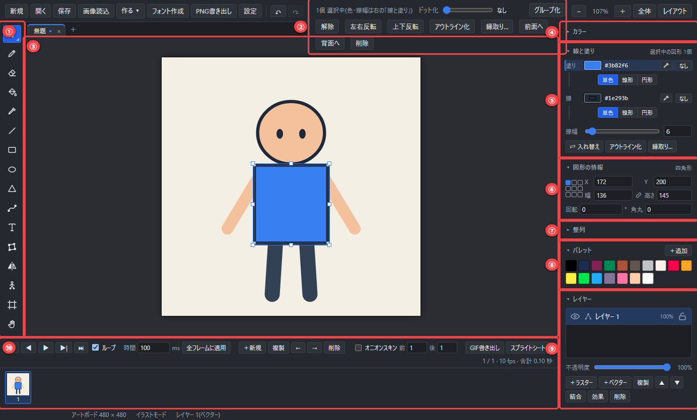
| 番号 | 名前 | 内容 |
|---|---|---|
| ① | ツールバー | 使うツールを選びます(キーボードでも切り替え可。10章) |
| ② | ツールオプション | 今のツールの設定。リグツールではモード切り替え・バインド・プリセットなどがここに出ます。1段に収まらないときは、下の段がキャンバスの上に重なって出ます(キャンバスの位置は動きません) |
| ③ | キャンバス | 絵を描く場所。ホイールでズーム、Space+ドラッグ(または中ボタン)で表示位置を移動 |
| ④ | カラー | メインカラー(左上)とサブカラー(右下)。X キーで入れ替え。下の「最近使った色」に、描いた・塗った色が新しい順に並びます(クリックでメイン、右クリックでサブ) |
| ⑤ | 線と塗り | 選んだ図形の線の色・塗りの色・線幅。アウトライン化・縁取りのボタン(4章) |
| ⑥ | 図形の情報 | 選んだ図形の種類・位置・大きさ。数値を変えると形が変わります(3.9) |
| ⑦ | 整列 | 選んだ図形を左・中央・右・上・下にそろえる / 等間隔に並べる(3.5) |
| ⑧ | パレット | クリックでメイン、右クリックでサブに色を取る。Shift+クリックで削除 |
| ⑨ | レイヤー | レイヤーの一覧。目のアイコンで表示/非表示、鍵でロック。名前はダブルクリックで変更 |
| ⑩ | タイムライン | アニメーションのフレーム一覧と再生・書き出し(8章) |
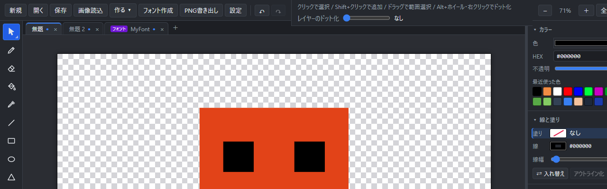
キャンバスの上にタブが並び、絵を何枚も同時に開いておけます。今描いている絵はそのままで、別の絵を描き進められます。
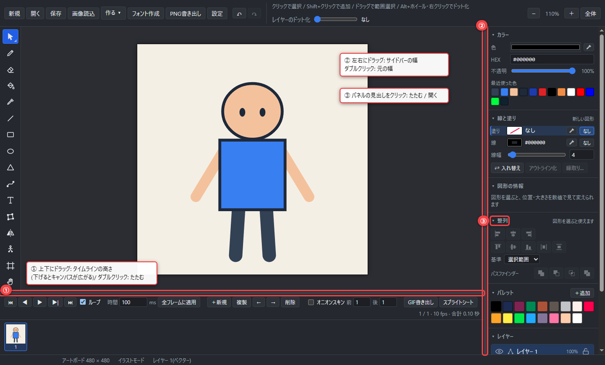
上のバーのボタン(新規・開く・保存…)と、左のツールバーのツールは、持って好きな所へ動かせます。よく使う機能のボタンを足したり、使わないボタンを外したりもできます。
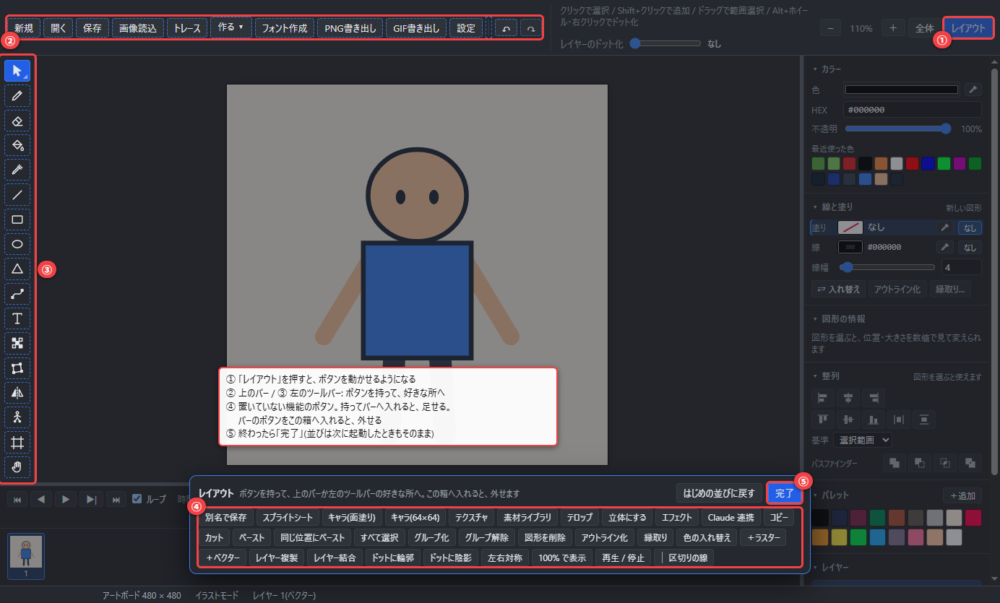
| 困ったとき | こうします |
|---|---|
| ボタンをなくしてしまった / 元に戻したい | 「レイアウト」→ 「はじめの並びに戻す」(メニューの 表示 →「ボタンをはじめの並びに戻す」でも) |
| ボタンを押しても動かない | レイアウトを変えている間は、ボタンは動かすだけです。「完了」を押すと、ふつうに使えます |
カラー・線と塗り・図形の情報・整列・パレット・レイヤーの並び順(▲▼)と、出す / 出さない(チェック)を変えられます。「はじめに戻す」で元どおり。
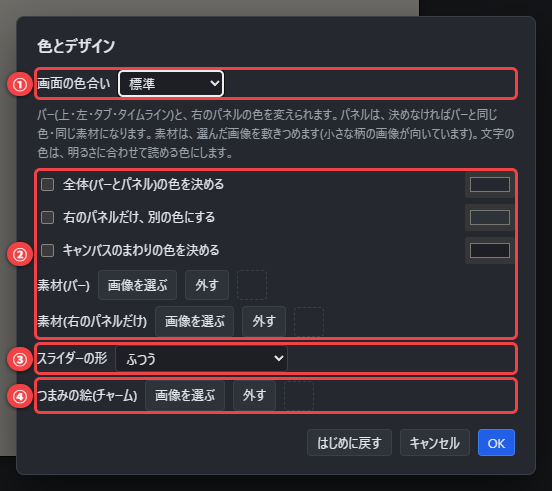
| 番号 | 項目 | 内容 |
|---|---|---|
| ① | 画面の色合い | 標準 / 暗い / もっと暗い(黒) |
| ② | 色と素材 | バー(上・左・タブ・タイムライン)と右のパネルの色、キャンバスのまわりの色。素材は選んだ画像を敷きつめます(小さな柄の画像が向いています)。明るい色にすると、文字は自動で暗い色になります |
| ③ | スライダーの形 | ふつう / 串団子(細い棒に、丸い玉) |
| ④ | つまみの絵 | スライダーのつまみの代わりに出す絵(チャーム)。まわりが透明な PNG が向いています |
「はじめに戻す」で、標準の見た目に戻ります。
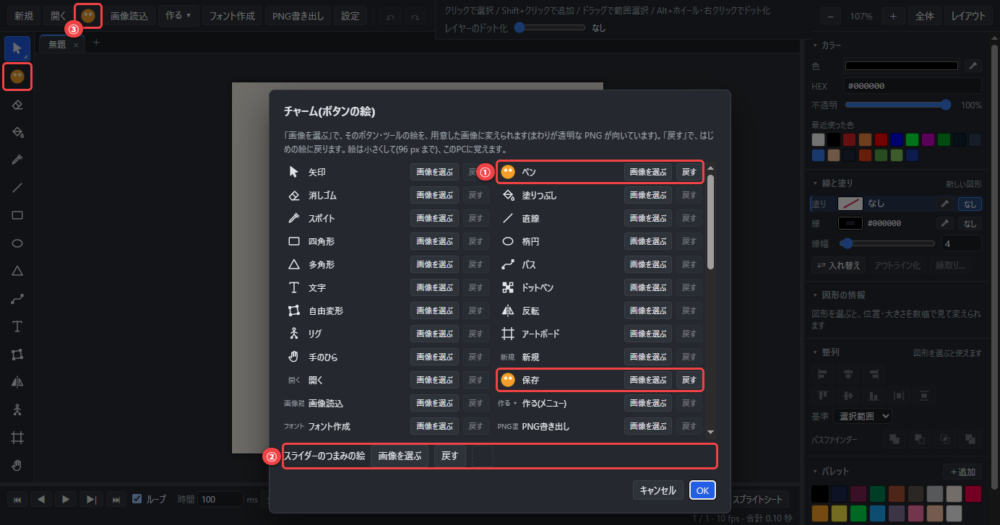
| 種類 | アイコン | 向いている絵 |
|---|---|---|
| ベクター | ノード | 図形・パスで描く絵。1つずつ選んで動かせ、リグで図形ごとに動かし方を変えられる(おすすめ) |
| ラスター | 四角 | ペンで塗る絵・読み込んだ画像。ピクセルで保存される |
新しいドキュメントの最初のレイヤーはベクターです。ペンで塗りたいときは「+ラスター」でラスターレイヤーを追加します。 図形ツール(直線・四角・楕円・パス)は、ラスターレイヤーを選んでいても自動でベクターレイヤーに描きます。
| ツール | キー | 使い方 |
|---|---|---|
| 矢印(選択) | V | 図形をクリックで選択、Shift+クリックで追加。何もない所からドラッグで範囲選択。塗りのない形も内側をクリックすれば選べます |
| ペン | B | ラスター: 描く(Shift+クリックで前の点から直線)/ ベクター: フリーハンドの線が図形になる |
| 消しゴム | E | ラスター: 消す / ベクター: 触れた図形を削除 |
| 塗りつぶし | G | ラスター: 似た色の範囲を塗る / ベクター: クリックした形の内側を塗る・線で囲まれた所を塗る。線が少し切れていても、もれずに塗れます(4章) |
| スポイト | I | 色を取る(右クリックでサブカラーへ)。描画ツール中は Alt+クリックでも |
| 直線・四角形・楕円 | L / U / O | ドラッグで描く。Shift で45°・正方形・正円、Alt で中心から |
| 文字 | K | クリックした所に文字を入力。文字をクリックで書き直し(3.6) |
| 多角形 | Y | 中心からドラッグ。はじめは三角形。ドラッグ中に ↑↓ キー(←→も)・マウスホイールで角の数を増減(3〜20)。Shift で上向きにそろえる(3.4) |
| パス(ベジェ) | P | クリックで角、ドラッグで曲線。始点をクリックで閉じる、Enter で確定、Esc で取り消し |
| 自由変形 | T | 枠の角をドラッグ = その角だけ動く(自由な形に)、辺の真ん中 = 辺ごと動く(正方形 → 平行四辺形)、枠の外 = 回転。Shift = 真横か縦にだけ動く、Ctrl = 中心から(反対の角・辺も逆向きに動く)、Alt+角 = 拡大縮小、Alt+辺 = 片方向に伸縮 |
| 反転 | F | 選んだ図形(ラスターはレイヤー全体の絵)を左右・上下に反転。ドラッグで好きな向きの軸で反転、Alt+ドラッグで反転したコピー(3.8) |
| リグ | R | ボーン・ポーズ・格子(9章) |
| アートボード | A | 書き出す範囲の移動・サイズ変更(絵は動きません) |
| 曲げる | C | パスの線の上をドラッグして曲げる(つかんだ所がマウスを通る)。Shift でぴったりの円弧(四角の辺を半円に など)、Alt+クリックでまっすぐに戻す。2つの図形の辺を1本ずつクリックすると、なめらかにつないで1つに。四角・楕円も曲げられます(3.20) |
| ものさし | M | 2点をドラッグして、距離・角度・幅・高さを測る(Shift で 45°ずつ)。値は上のツールオプションに出ます(3.19) |
| 手のひら | H / Space | 表示位置の移動 |
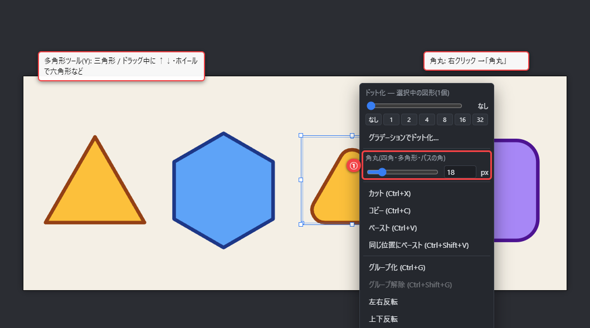
多角形ツール(Y)
できた多角形はふつうのパスなので、線と塗り・アウトライン化・縁取り・ドット化・リグがそのまま使えます。
角丸(かどまる)
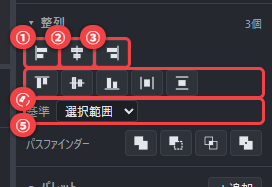
矢印ツールで図形を2つ以上選んで、右の「整列」パネルのボタンを押します。
| 番号 | 内容 |
|---|---|
| ① ② ③ | 左 / 左右の中央 / 右にそろえる |
| ④ | 上 / 上下の中央 / 下にそろえる、横に等間隔 / 縦に等間隔(3つ以上のとき。図形どうしのすき間を同じにする。基準が選択範囲なら両端の図形は動かさず、アートボードならアートボードの端から端まで広げて並べる) |
| ⑤ | 基準: 選択範囲(選んだ図形全体の枠に合わせる)/ アートボード(アートボードの端・中央に合わせる) |
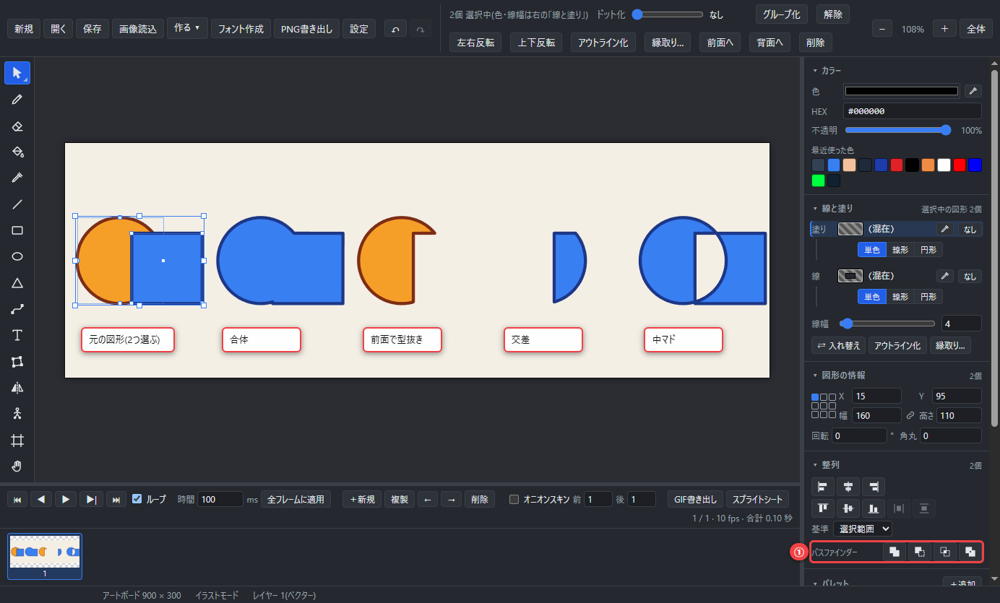
図形を 2つ以上 選ぶと、整列パネルの下の ① パスファインダー のボタン(右クリックメニューにもあります)で、図形の形を組み合わせて 1つのパス にできます(イラストレーターと同じ4つ)。
| ボタン | できる形 | 色 |
|---|---|---|
| 合体 | 全部をまとめた1つの形 | 一番前の図形の色 |
| 前面で型抜き | 一番後ろの図形から、前の図形の形を抜いた形 | 一番後ろの図形の色 |
| 交差 | 全部が重なっている所だけ | 一番前の図形の色 |
| 中マド | 重なっている所を抜いた形(奇数枚が重なる所だけ残る) | 一番前の図形の色 |
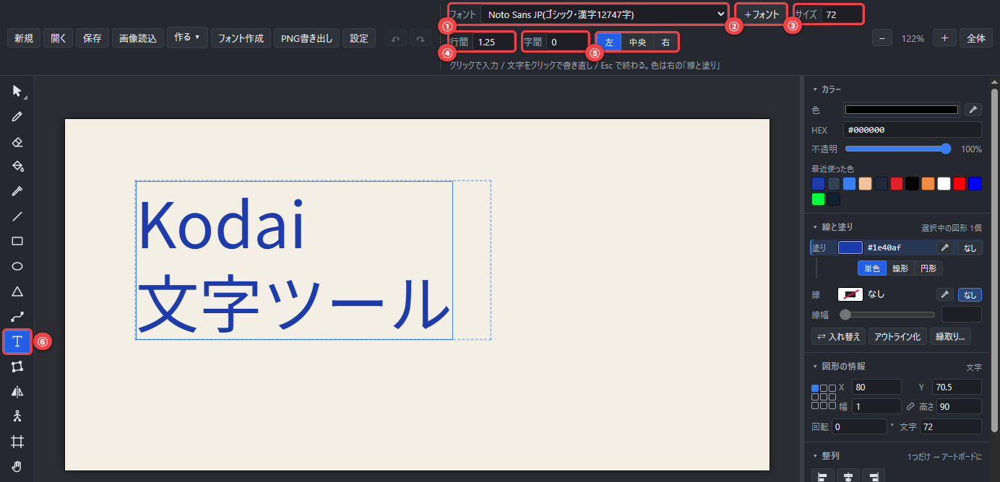
| 番号 | 内容 |
|---|---|
| ① | フォント: 「Kodai のフォント」(商用利用OK)と「取り込んだ・作ったフォント」から選ぶ |
| ② | ＋フォント: TTF・OTF・WOFF のフォントファイルを取り込む。取り込んだフォントは次回からも使えます |
| ③ | サイズ(px) |
| ④ | 行間(文字の大きさの何倍か)・字間(全部の字の、文字と文字の間。px) |
| — | カーニング・ベースライン(入力しているときだけ出ます。下の「字ごとの調整」) |
| ⑤ | 行のそろえ方(左・中央・右) |
字ごとの調整(カーニング・ベースライン)
文字を入力しているとき(文字ツールで文字をクリック、または矢印ツールで文字をダブルクリック)に、一部の字だけ詰めたり、上下にずらしたりできます。
| したいこと | 操作 |
|---|---|
| 2つの字の間を詰める・広げる(カーニング) | 字と字の間にカーソルを置いて Alt+←(詰める)/ Alt+→(広げる) |
| 選んだ字だけ字間を変える | 字を選んで(Shift+←→ かドラッグ)Alt+← / Alt+→ |
| 選んだ字を上下にずらす(ベースライン) | 字を選んで Alt+Shift+↑ / Alt+Shift+↓(カーソルだけのときは、その前の字) |
| 大きく動かす | Ctrl も一緒に押す(5倍) |
| 数値で決める | 上のオプション欄の「カーニング」「ベースライン」(px。ベースラインは + で上) |
| 元に戻す | 「字ごとの調整を消す」(字を選んでいれば その字だけ、選んでいなければ全部) |
Kodai のフォント(すべて Google Fonts・SIL Open Font License 1.1 = 商用利用OK。ゲームの素材にも使えます)
| フォント | 感じ | 収録している漢字 |
|---|---|---|
| Noto Sans JP(はじめの設定) | ゴシック | 12747字 |
| Noto Serif JP | 明朝 | 12744字 |
| BIZ UDPゴシック / 太字 | 読みやすいゴシック | 9575字 |
| BIZ UDP明朝 | 読みやすい明朝 | 9575字 |
| Zen 丸ゴシック | 丸ゴシック | 6682字 |
| DotGothic16 | ドット(このアプリ向き) | 6714字 |
| よもぎ | 手書き風 | 6684字 |
| 操作 | キー | 内容 |
|---|---|---|
| コピー | Ctrl+C | 選んだ図形をコピー。ほかのソフトにも画像として貼れます。図形を選んでいないときは、今のラスターレイヤーの絵を画像でコピー |
| カット | Ctrl+X | 選んだ図形を切り取り |
| ペースト | Ctrl+V | 少し右下にずらして貼る(続けて貼るとさらにずれる)。貼った図形が選ばれた状態になります |
| 同じ位置にペースト | Ctrl+Shift+V | コピーした所と同じ位置に貼る |
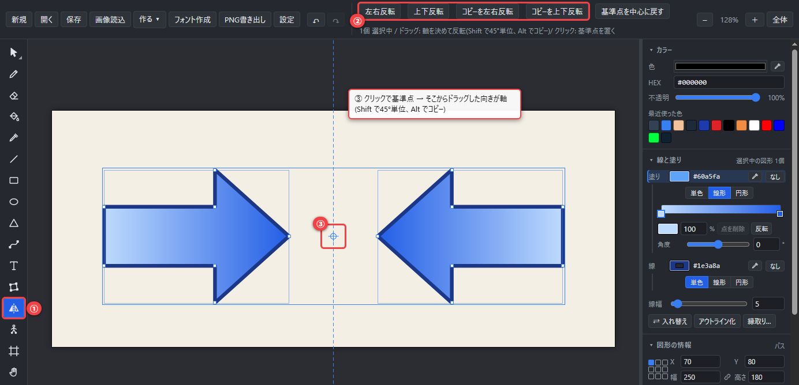
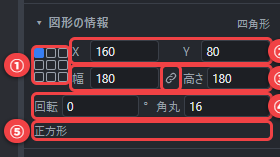
右のサイドバーの「図形の情報」に、選んだ図形の種類(右上。四角形・楕円・直線・パス・文字・グループ)と位置・大きさが出ます。数値を入れて Enter(またはほかの所をクリック)すると、その形に変わります。
| 番号 | 名前 | 内容 |
|---|---|---|
| ① | 基準点 | 9つの点のどれか。X・Y がどこの位置か、大きさを変える・回すときにどこを動かさないか(左上なら左上を固定して右下へ伸びる、真ん中なら中心から広がる) |
| ② | X・Y | 基準点の位置(px) |
| ③ | 幅・高さ | 大きさ(px。線幅は含みません)。間の鎖のボタンをオンにすると、縦横比を保ったまま変わります |
| ④ | 回転・種類ごとの値 | 回転: 入れた角度だけ回します(反時計回りが +。回すと四角・楕円はパスになります)。角丸(四角・角のあるパス)、直線の長さ・角度(始点は動かさない)、文字のサイズ |
| ⑤ | 情報 | パスの点の数・閉じた形か開いた線か、正方形・正円か、グループの中の図形の数 |
自分の画像をそのまま使いたいときは、3.17 素材ライブラリ を使います。
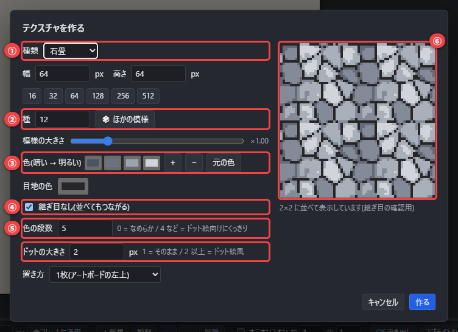
上の「作る ▾」→「テクスチャを作る…」(または ファイル → テクスチャを作る…)で、地面・壁・床などの模様を計算で作れます(AI やインターネットは使いません)。
| 番号 | 名前 | 内容 |
|---|---|---|
| ① | 種類 | 雲・ノイズ / 土・砂 / 草 / 石畳 / レンガ / タイル / 木目 / 大理石 / 水面 / 布(織り目)/ 畳 / 塗り壁(漆喰・砂壁)/ 板張り(床板)/ 天井板(竿縁)/ 古い板(風化した床板・縁側。節・割れ・釘)/ 古い塗り壁(汚れ・しみ・ひび。1枚が壁1面の高さで、上が天井・下が床)。幅・高さは下のボタン(16〜512)でも |
| ② | 種 | 数字を変えると別の模様になります(同じ数字なら、いつでも同じ模様)。「ほかの模様」でランダムに |
| ③ | 色 | 暗い → 明るいの順の色。クリックで変える、+ / − で増やす・減らす、「元の色」で戻す。レンガ・石畳・タイルは目地の色も(畳はへりの色、板張り・天井板は板のすき間の色) |
| ④ | 継ぎ目なし | オンだと、並べても継ぎ目が出ません(ゲームのタイル素材向け) |
| ⑤ | 色の段数・ドットの大きさ | 段数 4〜6 + ドット 2 などにするとドット絵風のくっきりした模様に |
| ⑥ | プレビュー | 2×2 に並べて見せます(継ぎ目の確認用)。値を変えるとすぐ変わります |
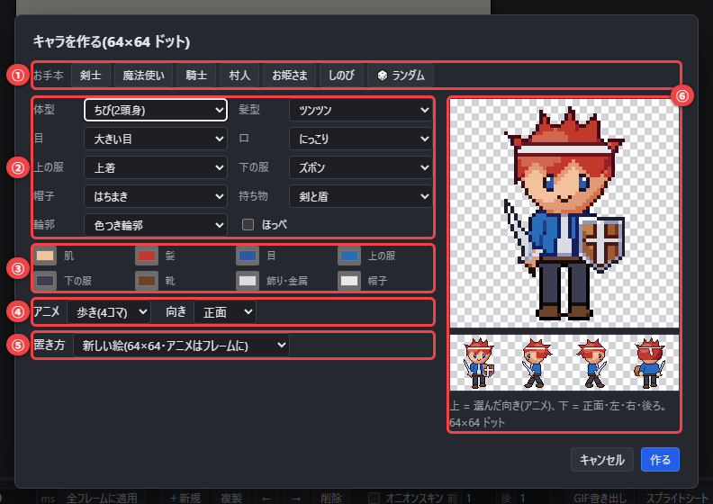
上の「作る ▾」→「キャラを作る…」(または ファイル → キャラを作る…)で、64×64 ドットのキャラをパーツから作れます。陰影(左上から光)と輪郭は自動で付きます。AI は使いません。
| 番号 | 名前 | 内容 |
|---|---|---|
| ① | お手本 | 剣士・魔法使い・騎士・村人・お姫さま・しのび。ランダムで、いろいろなキャラをすぐ作れます |
| ② | パーツ | 体型(ちび = 2頭身 / ふつう = 4頭身)、髪型(7種)、目、口、上の服(シャツ・上着・ローブ・よろい)、下の服、帽子(とんがり帽子・キャップ・はちまき・王冠)、持ち物(剣・杖・盾・剣と盾)、輪郭(色つき・黒・なし)、ほっぺ |
| ③ | 色 | 肌・髪・目・上の服・下の服・靴・飾り(金属・王冠など)・帽子。影とハイライトの色は自動で作ります |
| ④ | アニメ・向き | 止め絵 / 待機(4コマ)/ 歩き(4コマ)。向きは 正面・右向き・左向き・後ろ |
| ⑤ | 置き方 | 新しい絵(64×64。アニメは1コマ = 1フレーム。Enter で再生、GIF・スプライトシートで書き出し)/ 今の絵に新しいレイヤー / 4方向 × コマのスプライトシート(ゲームにそのまま使える並び: 行 = 正面・左・右・後ろ) |
| ⑥ | プレビュー | 上 = 選んだ向き(アニメが動きます)、下 = 4方向 |
メニューの「レイヤー → ドット絵」で、今のラスターレイヤーの絵を整えます(Ctrl+Z で戻せます)。
| 操作 | 内容 |
|---|---|
| 輪郭を付ける | 絵のまわりに 1ドットの輪郭。色は、となりのドットを暗くした色(色つき輪郭) |
| 陰影を付ける | 左上から光が当たったように、右下のふちを影、左上のふちを明るく |
| 左右対称にする | アートボードの真ん中を軸に、左半分を右へ反転してコピー(半分だけ描けば左右対称に) |
| 色を 8色 / 16色に減らす | 似た色をまとめて、色数をしぼります(ドット絵らしく・ゲーム機風に) |
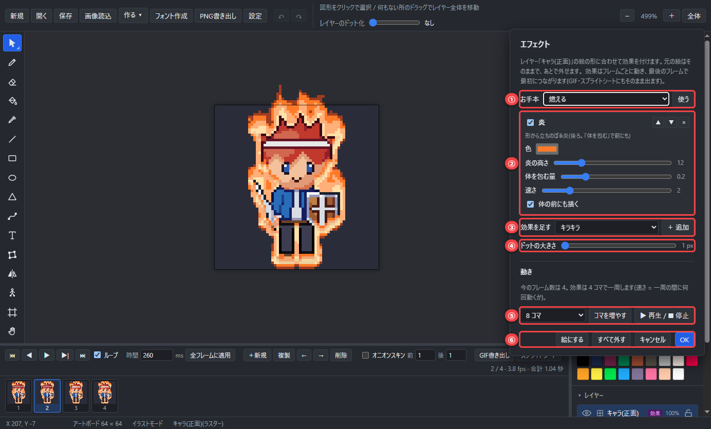
レイヤーパネルの「効果」ボタン(または レイヤー → エフェクト…)で、今のレイヤーの絵の形に合わせてオーラや炎などを付けられます。 元の絵はそのままで、あとから値を変えたり外したりできます。ダイアログは右に出るので、絵を見ながら調整できます(OK で決定、キャンセルで元どおり)。
| 番号 | 名前 | 内容 |
|---|---|---|
| ① | お手本 | 気のオーラ(青)・怒りのオーラ(赤)・燃える・青い炎・聖なる光・雷をまとう・毒・冷気・ダメージ・水中/陽炎・影を落とす。「使う」で今の効果と入れ替わります |
| ② | 付けた効果 | 効果ごとに、オン/オフ・色・大きさ・速さなど。▲▼ で描く順番、× で外す |
| ③ | 効果を足す | 下の表の10種類から選んで「＋ 追加」。いくつでも重ねられます |
| ④ | ドットの大きさ | 効果を何 px のドットで描くか(1px = 絵と同じ細かさ) |
| ⑤ | 動き | 効果はフレームごとに動き、最後のフレームで最初につながります。フレームが1つのときは止まった絵なので、「コマを増やす」でフレームを足します(今の絵を複製)。「再生」で動きを確認 |
| ⑥ | ボタン | 絵にする = 効果を新しいラスターレイヤー(キャラの後ろ・前の2枚)に描いて、ペンで手直しできるようにする / すべて外す / キャンセル / OK |
| 効果 | 描く場所 | 内容 |
|---|---|---|
| オーラ | 後ろ | 形のまわりにゆらめく気のオーラ。上に伸びる量を変えられます |
| 炎 | 後ろ(+前) | 形から立ちのぼる炎。「体を包む量」で体の下のほうも燃えます。青い色にすると青い炎に |
| 光(ふちが光る) | 後ろ | ぼんやり光る。明滅の強さを変えられます |
| 影 | 後ろ | 形をずらした影(横・縦のずれ、濃さ) |
| 電撃 | 前 | ふちから走るギザギザの稲妻。コマごとに変わります |
| キラキラ | 前 | 十字の光がまたたく |
| 立ちのぼる粒 | 前 | 頭の上から粒が昇って消える(丸 = 湯気・冷気、泡 = 毒・水) |
| 点滅(ダメージ) | 前 | 絵が色に光る。「交互」は1コマおき、「じわっと」はゆっくり |
| ゆらゆら | 絵そのもの | 絵を横にゆらす(陽炎・水の中) |
| 粒子 | 前(後ろにもできる) | 火花・魔法・煙・雪・雨・爆発・血しぶき・魔法陣など 43 種の粒子(Free GDevelop Particles Library から)。「種類」で選び、「広がり」で大きさ、「出る所」で 真ん中・上・下・形の中 を決めます。「色」を「下の色にする」にすると好きな色に。「一周の長さ」の秒数で1回りします |
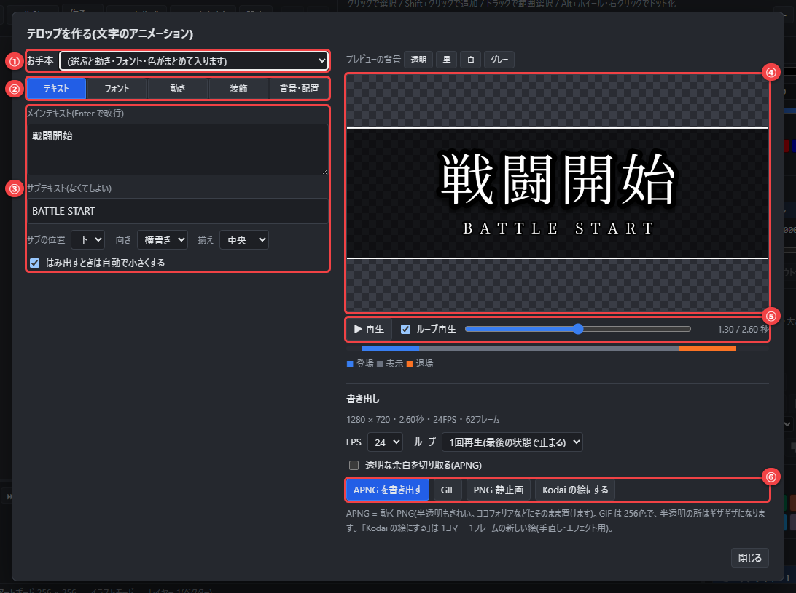
上の「作る ▾」→「テロップを作る…」(または ファイル → テロップを作る…)で、「戦闘開始」のようなカットイン、場所や時間の字幕、長めの文章などの 文字のアニメーションを作って、**APNG(動く PNG)**や GIF に書き出せます。TRPG のオンラインセッション(ココフォリアなど)の演出に使えます。
| 番号 | 名前 | 内容 |
|---|---|---|
| ① | お手本 | 戦闘開始・勝利(金)・敗北(血)・クリティカル・ファンブル・場所と時間・トレイラー・タイプライター・ラウンド・怪異。動き・フォント・色がまとめて入るので、文字だけ入れ替えれば使えます |
| ② | タブ | テキスト / フォント / 動き / 装飾 / 背景・配置 |
| ③ | 設定 | 下の表を参照 |
| ④ | プレビュー | 実際の動き。上のボタンでプレビューの背景(透明・黒・白・グレー)を変えられます |
| ⑤ | 再生 | 再生 / 停止、ループ再生、つまみで好きな時間へ。下の帯は 青 = 登場、グレー = 表示、オレンジ = 退場 |
| ⑥ | 書き出し | APNG(半透明もきれい。おすすめ)/ GIF(256色・半透明はギザギザ)/ PNG 静止画(完成した状態)/ Kodai の絵にする(1コマ = 1フレームの新しい絵。手直しやエフェクト用) |
| タブ | できること |
|---|---|
| テキスト | メインの文字(Enter で改行)、小さく添えるサブの文字(上 / 下)、横書き / 縦書き、揃え、はみ出すときに自動で小さく |
| フォント | Kodai のフォント(商用利用できる 8書体)と取り込んだフォント。文字サイズ・字間・行間。太さ(ウェイト) 100〜900(Noto Sans JP・Noto Serif JP で効く)と、どのフォントでも効く「太らせる」。サブの太さ・大きさ・字間・色 |
| 動き | 登場(1文字ずつ: フェード・浮かび上がる・降りてくる・上下から合流・スライド・字間が縮まる・中央から広がる・ぼかし解除・ポップ・大きい所から・回転・めくれる・落下バウンド・集合・タイプライター・明滅 / 全体: 叩きつけ・迫ってくる・奥から現れる・ワイプ・展開・グリッチ・閃光)、表示中(ふわふわ・波打つ・鼓動・震え・発光の明滅・ちらつき・点滅・時々ノイズ)、退場(17種類。なしにもできる)。時間・文字ごとのずらし・順番・動きのカーブ・強さ・前後の空白 |
| 装飾 | お手本10種(白+黒縁・金・銀・血・ネオン・怪しい紫・ポップ・ゴースト・墨・白抜き)。塗り(単色 / グラデーション)・縁取り(二重も)・影・光彩を個別に調整 |
| 背景・配置 | 文字のまわりの飾り(帯・虎柄テープ・ボックス・上下ライン・下線・サイドライン・コーナー枠)、画像全体の背景(単色・ビネット・上 / 下からのグラデーション)、画像サイズ(1280×720 など)、位置 |
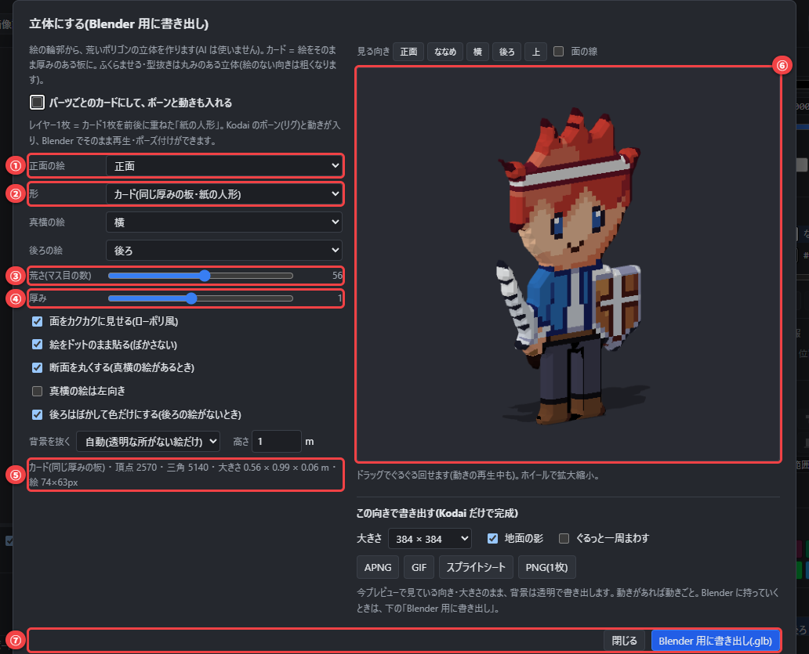
上の「作る ▾」→「立体にする…」(または ファイル → 立体にして書き出す…)で、今の絵を荒いポリゴンの立体にして、Blender などで開ける .glb ファイルに書き出せます。
AI は使わず、絵の輪郭から計算で作ります。
| 番号 | 名前 | 内容 |
|---|---|---|
| ① | 正面の絵 | 立体のもとになる絵。「表示中のレイヤー全部」か、レイヤーを1つ選びます |
| ② | 形 | カード(同じ厚みの板。絵がそのまま出る・おすすめ)/ ふくらませる / 型抜き。真横・後ろの絵は、あれば下で選びます(レイヤーの名前に「横」「後ろ」が入っていると自動で選ばれます) |
| ③ | 荒さ | 高さ方向のマス目の数。少ないほど面が少なく、カクカクになります |
| ④ | 厚み | 奥行きの倍率 |
| ⑤ | 情報 | 作り方(ふくらませる / 型抜き)・頂点と三角の数・大きさ |
| ⑥ | プレビュー | ドラッグでぐるぐる回す(動きの再生中も)・ホイールで拡大縮小。上のボタンで正面・ななめ・横・後ろ・上から。「面の線」でポリゴンの割り方が見えます |
| ⑦ | 書き出し | プレビューの下の「この向きで書き出す」= 今見ている向きのまま APNG / GIF / スプライトシート / PNG に(Kodai だけで完成)。いちばん下の「Blender 用に書き出し(.glb)」= Blender に持っていく |
この向きで書き出す(Blender を使わず、Kodai だけで完成)
プレビューを好きな向きに回して、プレビューの下のボタンを押すと、その向きから見た絵を書き出せます。背景は透明です。
形は3通り
| 形 | どうなるか | 向いているもの |
|---|---|---|
| カード(既定) | 輪郭を同じ厚みで押し出した板。裏は表と同じ絵(裏から見ると左右が逆) | **絵をそのまま使いたいとき。**紙の人形のように、2D の動きを 3D でやる |
| ふくらませる | 真ん中ほど厚く、ふちほど薄い(ぬいぐるみのよう) | 丸みがほしいとき。横から見ると、絵が伸びて粗くなります |
| 型抜き | 正面 + 真横の絵の2方向から型抜き。横から見ても絵が合います | 真横の絵を用意できるキャラ。真横の絵は、正面と頭・足の高さをそろえて描きます |
パーツごとのカードにして、ボーンと動きも入れる(紙の人形)
ダイアログの一番上のチェックを入れると、レイヤー1枚 = カード1枚を前後に重ねた人形になり、Kodai のボーン(リグ)と動きも一緒に書き出します。 Blender で開くと、そのまま再生でき、ボーンを回してポーズも付けられます。ボーンのある絵では、はじめからチェックが入ります。
準備: 頭・体・腕・脚などを別々のレイヤーに描く(または「パーツに分ける(AI)」(12章))→ リグツール(R)でボーンを入れ、レイヤーをボーンにつなぐ(9章)→ 歩くなどの動きを付ける
下のレイヤーほど奥に並びます。「重ねる間隔」でカードどうしの前後の間を変えられます
動きがあれば、開いたときから再生しています。再生しながらドラッグで回せます(「■ 止める」で止まる)
Blender では、ボーンは「アーマチュア」、動きは「アクション(Kodai_anim)」として入ります。スペースキーで再生
入らないもの: 格子の伸び縮み(弾む・待機の動き)、コマごとに描き分けた絵(今のフレームの絵を使います)
後ろの絵がないときは、正面の色をぼかしたものを後ろに貼ります(後頭部に顔が出ないように)。後ろ向きの絵があると、後ろ姿もきれいになります
背景つきの絵(透明な所がない絵)は、四隅の色を背景として自動で抜きます
キャラメーカー(3.11)のキャラは、向きを変えて「今の絵に新しいレイヤー」で 正面・右向き・後ろ の3枚を置き、レイヤー名を「正面」「横」「後ろ」にすると、そのまま立体にできます
Blender で開く: ファイル → インポート → glTF 2.0 (.glb/.gltf)。高さは 1m(変えられます)、足もとが地面です
ふくらませる・型抜きでは、へこんだ所(口の中・脇の下)は形にならず、絵として貼られます
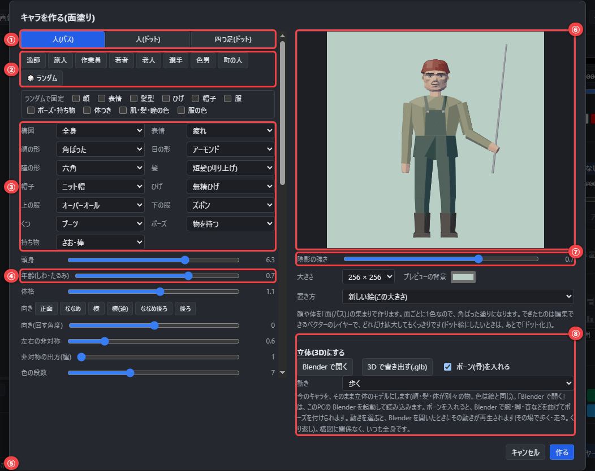
上の「作る ▾」→「キャラを作る(面塗り)…」で、3.11 とは別の画風のキャラを作れます。輪郭線を使わず、面と色で見せる画風です。上のタブで、作り方を3つから選びます。
| タブ | 作り方 | できるもの |
|---|---|---|
| 人(パス) | 顔や体を、小さな面(パス)の集まりで作ります。面ごとに1色なので、角ばった塗りになります | ベクターのレイヤー(編集できるパス)。どれだけ拡大してもくっきり。全身(頭身 2.5〜8)・胸から上・顔のアップ |
| 人(ドット) | ドットで、丸みを 明・中・影 の3段に塗ります | ラスターのレイヤー。全身・頭身 2〜8・ポーズ・持ち物 |
| 四つ足(ドット) | 同じくドットで | 狼・犬・猫・馬・鹿・猪 + 体つきのスライダー |
人(パス)の画面
| 番号 | 名前 | 内容 |
|---|---|---|
| ① | タブ | 人(パス)/ 人(ドット)/ 四つ足(ドット) |
| ② | お手本・ランダム | 漁師・旅人・作業員・若者・老人・選手・色男・町の人。顔のパーツの調整は、お手本を変えても残ります。「🎲 ランダム」で、顔・髪・服・色・体つきをまとめてランダムに(構図と大きさはそのまま。何度でも押せます)。すぐ下の「ランダムで固定」にチェックを入れた所(顔 / 表情 / 髪型 / ひげ / 帽子 / 服 / ポーズ・持ち物 / 体つき / 肌・髪・瞳の色 / 服の色)は、ランダムにしても今のまま変わりません(例: 顔と髪型を固定して、服だけ次々に変える) |
| ③ | 見た目 | 構図(全身 / 胸から上 / 顔のアップ)、表情(ふつう・ほほえみ・笑う・怒り・悲しみ・驚き・疲れ・にやり・おびえ)、顔の形(ふつう・丸い・角ばった・面長・こけた)、目の形(アーモンド・丸い・切れ長・鋭い・半目・点)、瞳の形(六角・丸・ひし形・四角・縦長・星)、髪(短髪(刈り上げ)・立ち上げ・横分け・オールバック・無造作・ツンツン・アフロ・坊主・ボブ・長い・なし)、帽子、ひげ、上の服(セーター・オーバーオール・上着・コート・シャツ・半そで)、下の服(ズボン・半ズボン・スカート)、くつ、ポーズ(立つ・腰に手・手を上げる・物を持つ)、持ち物(さお・バット・ランタン・かばん) |
| ④ | 頭身・年齢・体格・向き・色の段数 | 頭身は 2.5〜8(低いほど頭が大きい)。年齢を上げると、目の下のたるみとほうれい線が出ます。向きは、ボタン(正面・ななめ・横・横(逆)・ななめ後ろ・後ろ)か、スライダーで 360° どこへでも回せます(体ごと回ります。横顔・後ろ姿も作れます)。彫りの深さは顔の凹凸の強さ(上げるほど、眉・鼻・ほお骨・あごが前へ出て、目のまわり・ほお・唇の下がくぼみます。0 で平たい顔)。面の細かさは顔・髪・体をそれぞれ 1〜3(上げるほど面が細かくなり、丸みが出ます。顔は 1 = 約 100 枚、2 = 約 400 枚、3 = 約 1700 枚。体を 3 にすると全部で数千枚になり、置いたあとの動作が重くなります)。左右の非対称は、目・眉・口角・ほお・えら・鼻先を左右でずらします(0 でぴったり左右対称、1 くらいまでが自然、3 まで上げるとはっきり崩れます。「非対称の出方」でずれ方を変えます)。色の段数は、面の明るさを何段に丸めるか(少ないほど、同じ色の面が増えてすっきり) |
| ⑤ | 顔のパーツを調整 | 目の大きさ・間隔・高さ・つり目/たれ目・瞳の大きさ、眉の太さ・高さ、鼻の幅・長さ・高さ、口の幅・高さ・くちびるの厚み、えらの幅・あごの長さ・ほお骨・顔の幅・耳の大きさ。「元に戻す」で全部もとの値に |
| ⑥ | プレビュー | 変えるとすぐ変わります |
| ⑦ | 陰影の強さ | 0.7 がふつう。右へ動かすほど影がきつくなります |
| ⑧ | 立体(3D)にする | 「Blender で開く」= 今のキャラを立体のモデルにして、このPCの Blender を起動して読み込みます。「3D で書き出す(.glb)」= 立体のモデルをファイルに保存します(Blender・Unity などで開けます)。「ボーン(骨)を入れる」にチェック(はじめから入っています)で、Blender でポーズを付けられる骨組みも入ります。「動き」で 歩く / 走る / 待機 / 手を振る / 全部 / なし を選べます(選んだ動きが、Blender を開いたときに再生されます)。「人(パス)」のときだけ出ます |
人(ドット)・四つ足(ドット)
---|---|---| | ① | 人 / 四つ足 | 作るものを切り替えます | | ② | お手本 | 人: 漁師・選手・旅人・作業員・子ども・町の人 / 四つ足: 狼・犬・猫・馬・鹿・猪 | | ③ | 頭身・体格 | 頭身は 2〜8。低いほど頭が大きく、子どもっぽくなります | | ④ | 見た目 | 構図(全身 / 胸から上)、顔の形、表情(ふつう・ほほえみ・笑う・怒り・悲しみ・驚き・疲れ)、髪、帽子、ひげ、服、くつ、ポーズ(立つ・腰に手・手を上げる・物を持つ)、持ち物(さお・バット・ランタン・かばん) | | ⑤ | 色 | 肌・髪・目・服・くつ・帽子・小物。影と明るい面の色は自動で作ります | | ⑥ | プレビュー | 変えるとすぐ変わります | | ⑦ | 陰影の強さ | 0.7 がふつう。右へ動かすほど影がきつくなり、左へ動かすとのっぺりします |
自分で持っている画像(テクスチャ・素材)を、フォルダごと Kodai に取り込んでおき、いつでも絵に置けます。 「テクスチャを作る」(3.10)が色や模様を計算で作るのに対して、こちらは画像をそのまま使います。新しい素材を足すのに、Kodai のアップデートは要りません。
上の「作る ▾」→「素材ライブラリ…」(または ファイル → 素材ライブラリ…)
| 項目 | 内容 |
|---|---|
| フォルダを取り込む… | 選んだフォルダの中の画像(PNG・JPEG・WebP・GIF・BMP)を、下のフォルダもふくめて全部取り込みます。フォルダの名前がグループの名前になります。もう一度同じフォルダを取り込むと、増えた・変わった画像だけ入れ直します |
| 画像を足す… | 画像を選んで、今のグループに足します |
| グループ・名前で探す | グループ(フォルダ)でしぼる、名前の一部で探す |
| 大きさ | 置くときの倍率 |
| 継ぎ目をなじませる | 並べたときに継ぎ目が見えないよう、ふちを反対側と混ぜます(その分、少し小さくなります)。もともと継ぎ目のないテクスチャには要りません |
| ドットの大きさ | 2 以上でドット絵風 |
| 置き方 | 1枚(アートボードの左上)/ アートボード全体に敷き詰める |
| この素材を消す・このグループを消す | ライブラリから消します(元のフォルダの画像は消えません) |
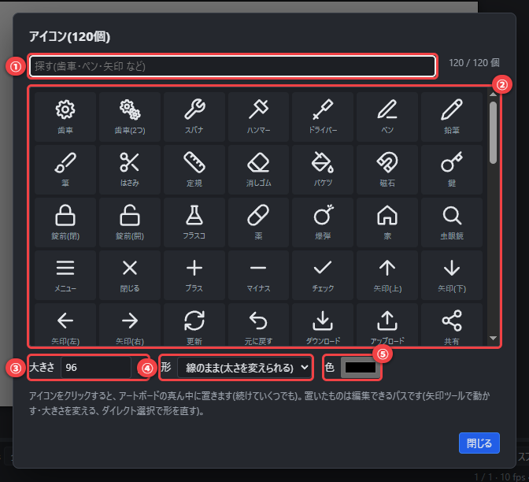
いつでも使える汎用のアイコンを、編集できるパスとして置けます。上の「作る ▾」→「アイコン…」(または ファイル → アイコン…)。
| 番号 | 項目 | 内容 |
|---|---|---|
| ① | 探す | 名前や言葉で探します(歯車・矢印・天気・お金・pen など。日本語でも英語でも) |
| ② | 一覧 | クリックすると、アートボードの真ん中に置きます(続けていくつでも)。置いたアイコンは選ばれた状態になります |
| ③ | 大きさ | 置くときの幅・高さ(px) |
| ④ | 形 | 線のまま(あとで「線と塗り」で線幅を変えられる)/ 塗りの形にする(線をアウトライン化した塗りのパス。ロゴやゲームの UI 向け) |
| ⑤ | 色 | 線(塗りの形なら塗り)の色。はじめはメインカラー |
src/vendor/ICONS-LICENSE.txt)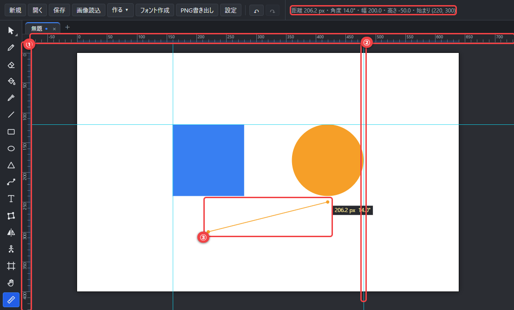
| 番号 | 名前 | 内容 |
|---|---|---|
| ① | 定規 | キャンバスの上と左の目盛り(px。0 はアートボードの左上とは限りません = 絵の座標)。メニューの 表示 →「定規」(Ctrl+R)で出す / 隠す。アートボードの範囲は青い帯、マウスの位置は青い線で出ます |
| ② | ガイド | 定規からキャンバスへドラッグして置く水色の線(上の定規から = 横の線、左の定規から = 縦の線)。矢印ツールでガイドをドラッグして動かす、定規の上へ戻すと消えます。図形を矢印ツールで動かすと、枠の端・真ん中がガイドに吸い付きます |
| ③ | ものさし(M) | 2点をドラッグして、距離・角度(右 = 0°、反時計回り)・幅・高さを測る。値は上のツールオプションに出ます。Shift で 45°ずつ |
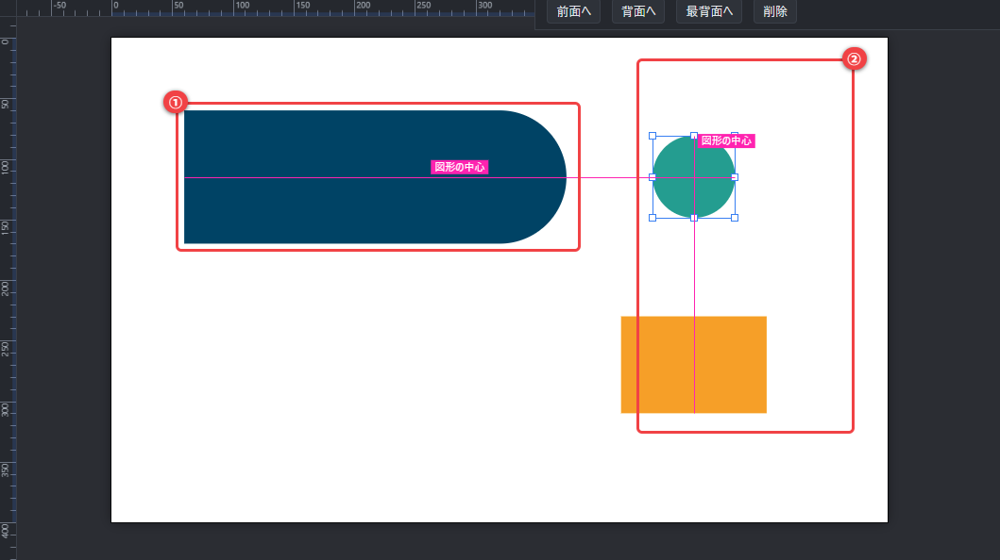
まっすぐな線を、きれいに曲げられます。
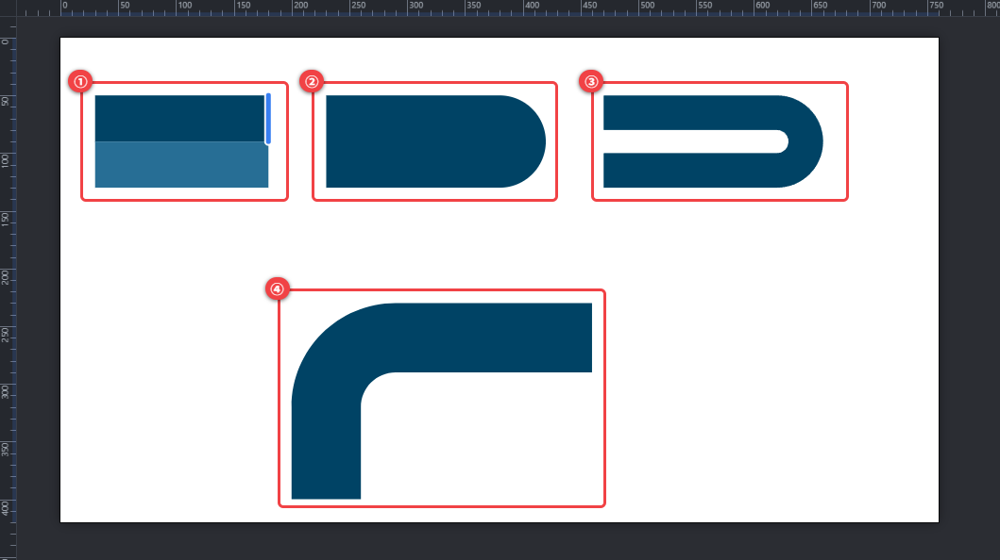
2つの図形の辺を、なめらかな線でつないで1つの図形にできます。
矢印ツールで図形を動かすと、ほかの図形やアートボードの端・中心に近づいたところで吸い付き、ピンクの線と「図形の中心」「アートボードの中心」「図形の左端」などの文字が出ます(どこにそろったかが分かります)。
図形には 「線」(ふち) と 「塗り」(中身) の2つの色があります。右側の「線と塗り」パネルで見たり変えたりできます。
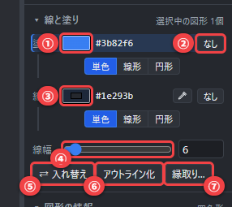
| 番号 | 内容 |
|---|---|
| ① | 塗りの色。クリックすると色を選べます。選んでいる間、図形の色がその場で変わります |
| ② | 「なし」: 塗りを消す(線だけの図形にする)。線の行の「なし」は線を消す |
| ③ | 線の色(枠だけの四角が「線」の印) |
| ④ | 線幅。スライダーか数字で。複数の図形を選んでいればまとめて変わります |
| ⑤ | 入れ替え: 線の色と塗りの色を入れ替え |
| ⑥ | アウトライン化(5章) |
| ⑦ | 縁取り…(6章) |
ベクターレイヤーでは、形の内側ならどこをクリックしてもその図形の塗りが変わります(ふちを狙う必要はありません)。
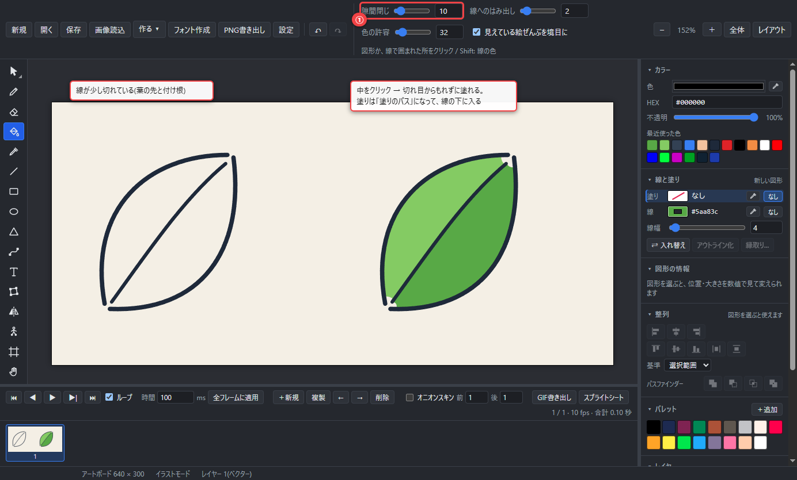
ペンで描いた線のように、きっちり閉じていない線で囲んだ所も、中をクリックすれば塗れます(Kaiju のバケツと同じ仕組みです)。
塗りつぶしツールを選ぶと、上のバーに設定が出ます(①)。
| 設定 | 内容 |
|---|---|
| 隙間閉じ | 線の切れ目がこの幅(px)より狭ければ、そこからもれずに塗れます。はじめは 10。0 にすると、ふつうのバケツ(切れ目からもれる)。細いとがった所に塗り残しが出るときは、小さくします |
| 線へのはみ出し | 塗る範囲をこの幅(px)だけ広げて、線の下にもぐらせます(線とのあいだに、すき間が残りません)。はじめは 2 |
| 色の許容 | 大きいほど、似た色まで広く塗ります。はじめは 32 |
| 見えている絵ぜんぶを境目に | オン(はじめ): ほかのレイヤーの線も境目にします / オフ: 今のレイヤーの絵だけを境目にします |
| 隣接ピクセルのみ(ラスター) | オフにすると、つながっていなくても、似た色の所ぜんぶを塗ります(このときは、隙間閉じ・はみ出しは使いません) |
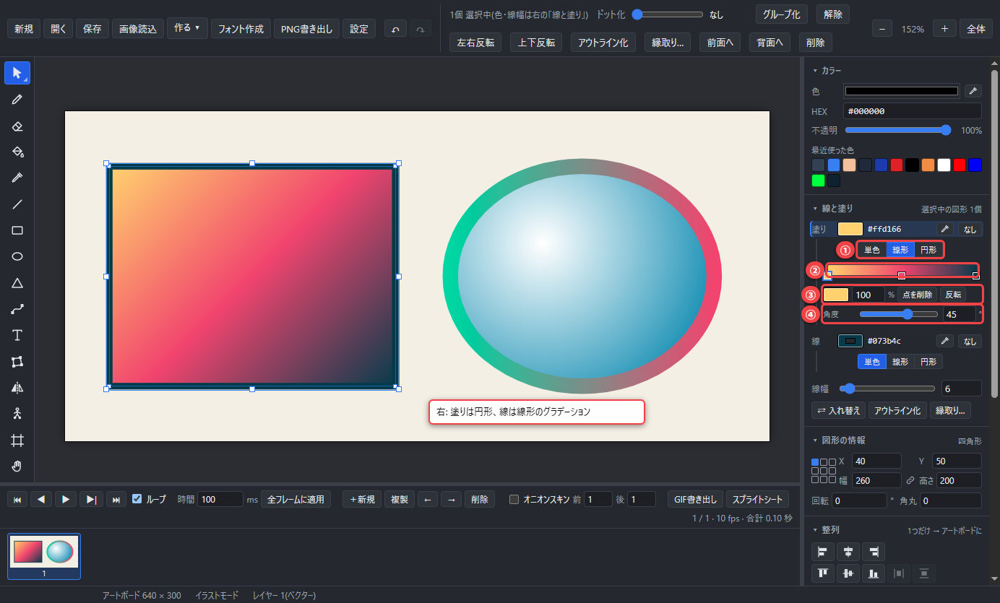
図形を選ぶと、塗り・線それぞれの下に ① 単色 / 線形 / 円形 のボタンが出ます。「線形」「円形」でグラデーションになります。
| 番号 | 内容 |
|---|---|
| ① | 単色 / 線形(まっすぐ変わる)/ 円形(中心から外へ変わる) |
| ② | 色の帯。下の四角が色の点。点をドラッグで位置を変える、帯をクリックで点を追加(その場所の色で) |
| ③ | 選んだ点の 色(四角をクリック)・不透明度(%)・点を削除(3つ以上のとき)・反転(色の並びを逆に) |
| ④ | 線形は 角度(0° = 左 → 右、90° = 上 → 下)。円形は 中心の位置(横・縦)と大きさ |
「線」を、同じ見た目の「塗り」の図形に変換します(イラストレーターの「パスのアウトライン」と同じ)。 線の太さに頼らず、パスの形だけで絵を成立させたいときに使います。
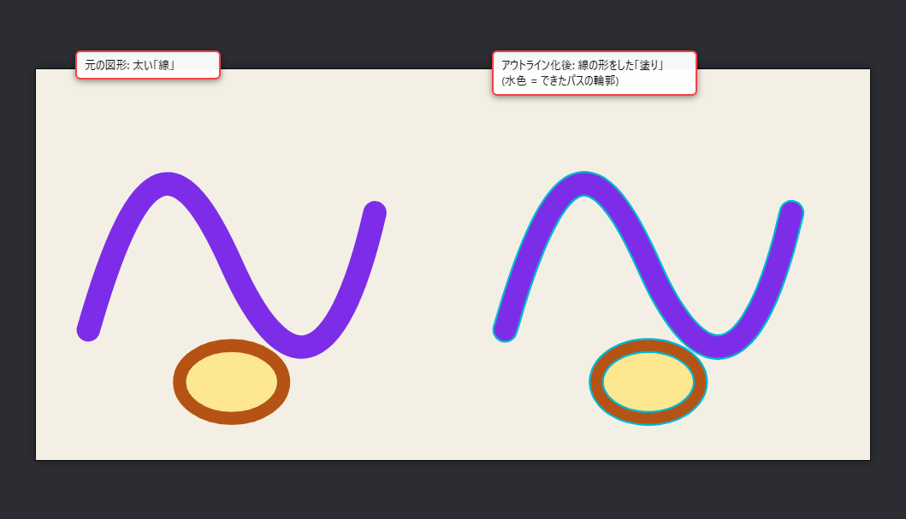
使い方: 矢印ツールで図形を選ぶ(複数・グループも可)→ 次のどれか
点は少なくまとまります: できたパスの点(アンカーポイント)は、角と、曲線の上下左右の端を中心に置きます。丸い線なら外側 4点 + 内側 4点、「o」の字も同じです。 まっすぐな辺は、両端の角だけになります。形は細かくなぞってから曲線を当てはめるので、元の見た目とのずれは、文字なら大きさの 0.2% ほどまでです。
変換のされ方
| 元の図形 | 結果 |
|---|---|
| 線だけ(直線・開いたパス・塗りなしの形) | 線の形をした「塗り」のパス1つ |
| 線と塗りがある | 「塗り」の図形と「線だったパス」のグループ |
| 輪になった線(円の線など) | 穴のあいたパス(複合パス) |
| 文字 | 字の形のパス |
| ドット化した図形(図形・グループ・レイヤーのドット化) | ドットの形そのままのパス(カクカクの形。色ごとに1つのパス) |
選んだ図形やグループ全体の外形(シルエット)をなぞったパスを新しく作ります。キャラクターの外側にフチを付けるときなどに。
使い方: 矢印ツールで図形を選ぶ(Ctrl+A ですべて)→「線と塗り」の 縁取り…(または右クリック / Ctrl+Shift+B)
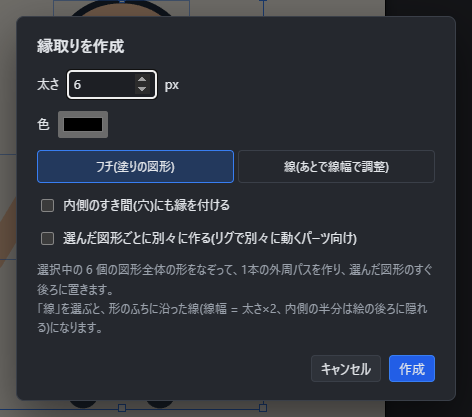
| 設定 | 内容 |
|---|---|
| 太さ | 外側に広げる幅(px) |
| 色 | 縁の色(はじめはメインカラー) |
| フチ(塗りの図形) | 外形を太さぶん広げた「塗り」の図形を、選んだ図形のすぐ後ろに置く(ふつうはこちら) |
| 線(あとで線幅で調整) | 外形に沿った「線」のパスを後ろに置く。線幅 = 太さ×2 で、内側の半分は絵に隠れる。あとから「線と塗り」の線幅で太さを調整しやすい |
| 内側のすき間(穴)にも縁を付ける | オフ: 一番外側だけ(シルエット)。オン: 腕と体のすき間のような「穴」のふちにも付ける |
| 選んだ図形ごとに別々に作る | オフ: 全体で1つ。オン: 図形(グループ)ごとに1つずつ作って、それぞれのすぐ後ろに置く |
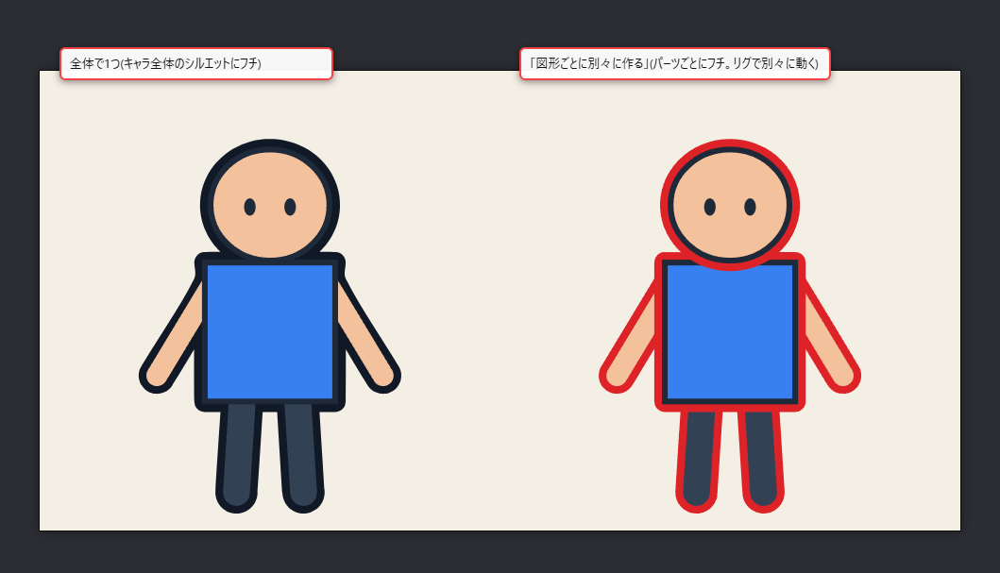
選んだ図形・グループ、またはレイヤー全体を、あとから戻せる「ドット風」にできます。
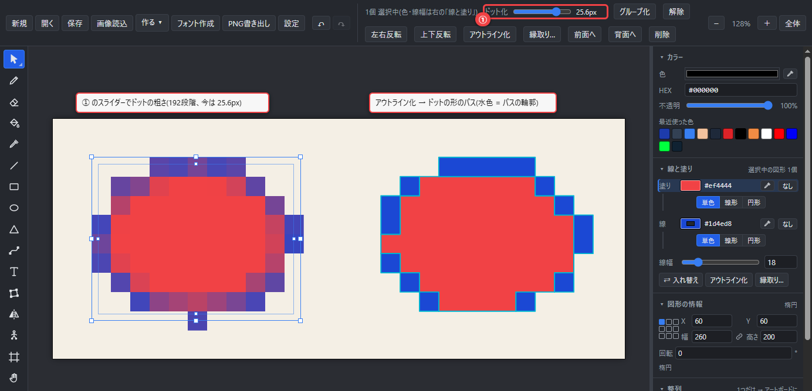
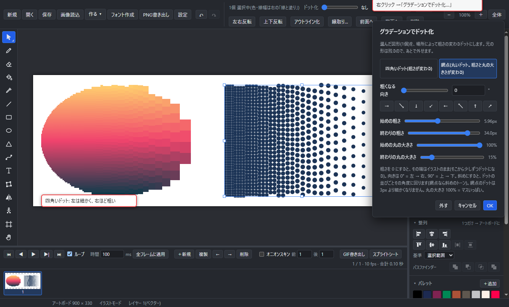
図形(何も選ばなければレイヤー全体)を右クリック →「グラデーションでドット化…」で、場所によって粗さが変わるドットにできます。設定の画面は右側に出て、キャンバスを見ながら値を動かせます(ホイールでズームもできます)。
| 項目 | 内容 |
|---|---|
| 四角いドット | ドットの粗さが、向きに沿って「始め」から「終わり」へだんだん変わる |
| 網点 | 丸いドット(マンガのトーン風)。粗さに加えて 丸の大きさ も「始め」から「終わり」へ変わる(100% = マスいっぱい) |
| 粗くなる向き | 角度(0° = 左 → 右、90° = 上 → 下 …)。矢印のボタンで8方向にすぐ合わせられる。斜めにすると、ドットの並びごとその角度に回る(網点なら斜めのトーン) |
| 始めの粗さ・終わりの粗さ | ふつうのドット化と同じ 192段階。0 にするとその端はイラストのままで、そこから少しずつドットになる |
| 方法 | 向いているもの | 説明 |
|---|---|---|
| コマ送り(フレームごとに描く) | 自由な変化、エフェクト、手描きアニメ | 1コマずつ絵を描く(8.3) |
| リグ(ボーンで動かす) | キャラの歩き・走り・手を振る・弾む | 絵は1枚だけ描いて、フレームごとのポーズで動かす(9章) |
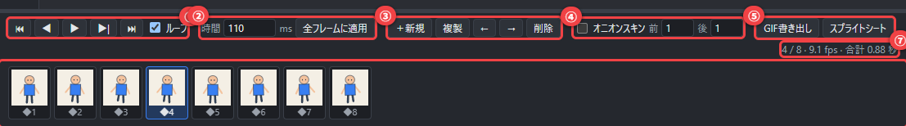
| 番号 | 内容 |
|---|---|
| ① | 再生まわり: 最初へ(Home)/ 前へ(,)/ 再生・停止(Enter) / 次へ(.)/ 最後へ(End)/ ループ(最後まで行ったら最初に戻る) |
| ② | 時間: 今のフレームの表示時間(ms)。100ms = 1秒に10コマ。「全フレームに適用」で全部を同じ時間に |
| ③ | フレーム操作: +新規(空のフレームを今の後ろに追加 Alt+N)/ 複製(今のフレームをコピー Alt+D)/ ← → 並べ替え / 削除 |
| ④ | オニオンスキン(Alt+O): 前後のフレームを薄く重ねて表示。「前」「後」で枚数(0〜5) |
| ⑤ | 書き出し: GIF / スプライトシート |
| ⑥ | フレーム一覧: クリックでそのフレームへ。◆ の付いた番号はリグのポーズのキーがあるフレーム |
| ⑦ | 今のフレーム / 全フレーム数・今のフレームの fps・全体の秒数 |
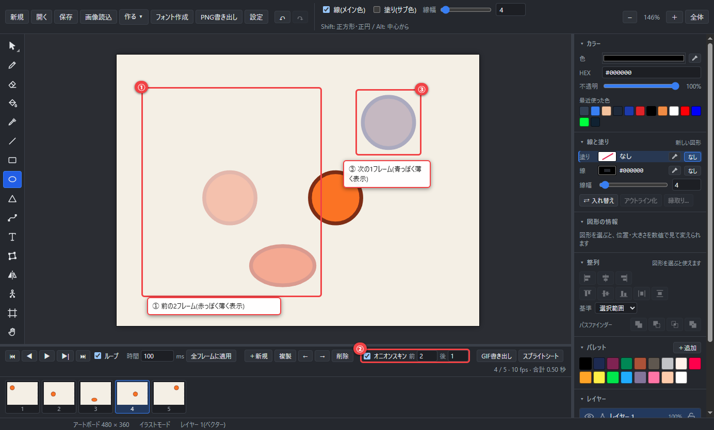
コツ
| 書き出し | 場所 | 内容 |
|---|---|---|
| GIF | タイムライン「GIF書き出し」 | アニメーションGIF。倍率とループを選べます |
| スプライトシート | タイムライン「スプライトシート」 | 全フレームを1枚に並べた PNG(ゲームエンジン用)。横一列・格子・縦一列。各フレームの位置と時間を JSON でも保存できます |
| PNG | 上の「PNG書き出し」(Ctrl+Shift+E) | 今のフレームだけを1枚の画像に |
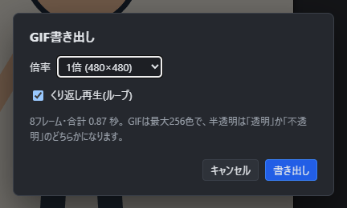
頭・体・腕・脚などが別々のレイヤーになっている絵なら、ボーンを自分で引かなくても、ボタン1つで入ります。
| 決まり | |
|---|---|
| レイヤーの見分け方 | まずレイヤーの名前: 頭・顔 / 体・胴 / 腕・手 / 脚・足 / しっぽ、左・右(英語の head / body / arm / leg / foot / tail / left / right も可)。髪・角・耳・目・口などは頭につなぎます |
| 名前で分からないとき | 絵の位置から決めます(一番上 = 頭、下のほう = 脚、体の左右 = 腕、残りで一番大きい = 体) |
| ボーンの置き方 | 体 = 下 → 上、頭 = 首 → 頭の上、腕・脚・しっぽ = 絵の長い向きの両端のうち、体に近いほうが付け根 |
| 左右 | 名前に左・右がなければ、体の中心より左にあるほうが「左」 |
絵に ボーン(骨) を入れて、ボーンを回すと絵がついてくる仕組みです。絵は1枚描くだけで、歩く・走る・手を振るなどのアニメーションが作れます。
① 絵を描く ─→ ② ボーンを作る ─→ ③ 絵とボーンをつなぐ(バインド)
│
⑥ 再生・書き出し ←─ ⑤ キーの間は自動で補間 ←─ ④ フレームごとにポーズ(キー)を付ける
(またはプリセットで一発)
リグツール(R)には3つのモードがあり、ツールオプションの左端で切り替えます。
| モード | すること |
|---|---|
| ボーン作成 | ボーンを作る・位置を直す(表示はポーズなしの元の形) |
| ポーズ | ボーンを回してポーズを付ける(今のフレームのキーになる) |
| 格子 | 伸び縮み(スクワッシュ&ストレッチ)用の格子の範囲を決める |
リグでいちばんきれいに動くのは、動くパーツが別々の図形(またはレイヤー)になっている絵です。
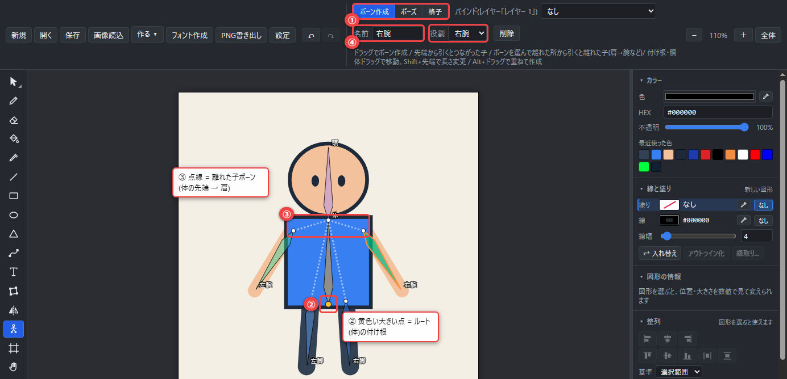
リグツール(R)→ ① ボーン作成 にして、キャンバスをドラッグします。
| 操作(ボーン作成モード) | 結果 |
|---|---|
| 何もない所からドラッグ | 新しいボーン(ボーンを選んでいればその子) |
| ボーンの先端からドラッグ | つながった子ボーン |
| ボーンの付け根をドラッグ | 付け根だけ動かす |
| ボーンの胴体をドラッグ | そのボーンと子を丸ごと移動 |
| Shift+先端をドラッグ | 先端を動かす(長さ・向きを変える。つながった子もついてくる) |
| Alt+ドラッグ | 既存のボーンの上でも必ず新しく作る(横向きキャラの手前と奥の脚を同じ位置に作るとき) |
| クリック | ボーンを選ぶ(オレンジの枠) |
| Delete / 「削除」 | 選んだボーンを削除(子は親につなぎ替え) |
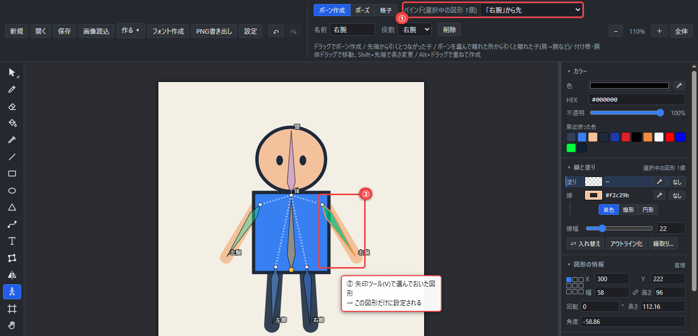
ツールオプションの ① バインド で、絵がどのボーンについていくかを決めます。
| バインドの種類 | 動き方 | 向いているパーツ |
|---|---|---|
| なし | 動かない | 背景など |
| 自動(全部のボーンの近さで変形) | 近いボーンほど強く影響を受けて、なめらかに曲がる | 1枚絵のキャラ、しっぽ、布 |
| 「○○」から先 | そのボーンとその子ボーンだけで自動に曲がる | 手足(腕 → 前腕 のように曲がる) |
| 「○○」に固定 | そのボーンにぴったりついて、形は曲がらない(軽い) | 胴体・頭など曲がらないパーツ |
設定の優先順位: 図形 > その図形が入っているグループ > レイヤー。 例: レイヤーを「自動」にしておき、頭のグループだけ「頭」に固定、といった使い方ができます。
おすすめの組み合わせ(正面キャラ)
| パーツ | バインド |
|---|---|
| 頭(目・口とグループ化) | 「頭」に固定 |
| 体 | 「体」に固定 |
| 左腕 / 右腕 | 「左腕」から先 / 「右腕」から先 |
| 左脚 / 右脚 | 「左脚」から先 / 「右脚」から先 |
レイヤーパネルで、バインドしたレイヤーには「リグ」の印が付きます。
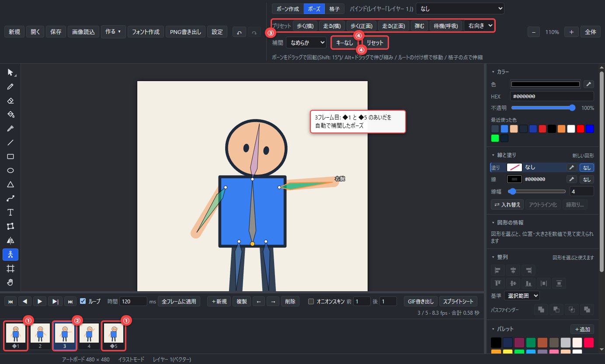
① ポーズ モードにして、ボーンをドラッグします。
| 操作(ポーズモード) | 結果 |
|---|---|
| ボーンをドラッグ | 付け根を中心に回転(Shift で15°単位) |
| Alt+ドラッグ | ボーンの向きに伸び縮み(0.1〜4倍) |
| ルート(体)の付け根をドラッグ | キャラ全体を移動(ジャンプ・上下の揺れなど) |
| 格子の点をドラッグ | 格子で伸び縮み(9.7) |
キーと補間
手でアニメーションを作る流れ(例: 手を振る)
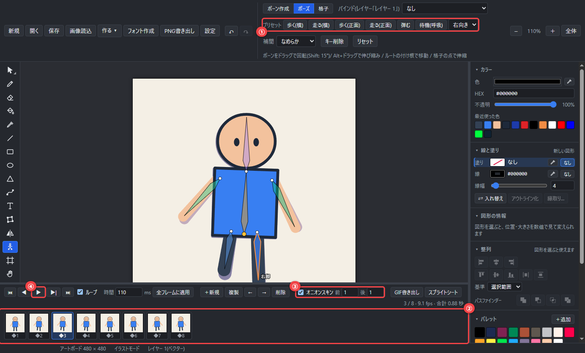
ポーズモードの ① プリセット のボタンを押すと、必要な数のフレームを作って、全フレームにポーズのキーを入れます。② のように全フレームに ◆ が付きます。④ の再生(Enter)で確認できます。
| プリセット | フレーム | 必要なもの | 内容 |
|---|---|---|---|
| 歩く(横) | 8 | 役割が「左脚」「右脚」のボーン | 横向きキャラの歩き。腕も振る。「右向き/左向き」で向きを選ぶ |
| 走る(横) | 6 | 同上 | 横向きキャラの走り |
| 歩く(正面) | 8 | 同上 | 正面向きキャラの歩き(足踏み+体の揺れ) |
| 走る(正面) | 6 | 同上 | 正面向きキャラの走り |
| 弾む | 8 | なし(格子を自動で作る) | ぴょんぴょん弾む。つぶれて伸びる |
| 待機(呼吸) | 8 | なし(格子を自動で作る) | その場でゆっくり呼吸 |
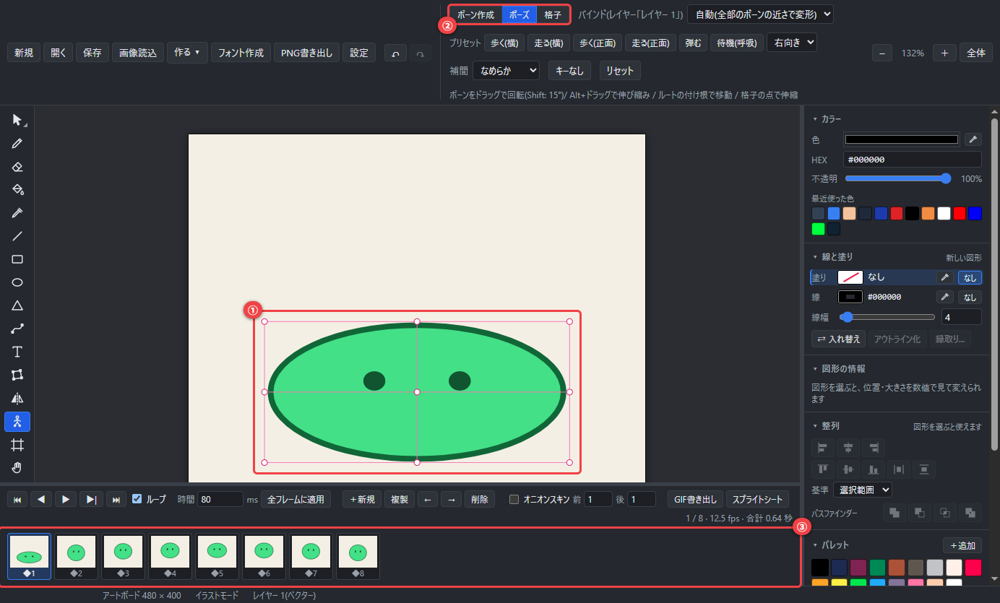
ボーンがなくても、格子で絵全体をつぶしたり伸ばしたりできます(スライムやボールなど)。
| 症状 | 原因と対処 |
|---|---|
| ポーズを付けても絵が動かない | バインドが「なし」。ツールオプションの「バインド」を設定する。トースト「リグにバインドしたレイヤー・図形がありません」が出ていないか確認 |
| 「○○には役割が「左脚」か「右脚」のボーンが必要です」 | ボーン作成モードで脚のボーンを選び、「役割」を左脚・右脚にする |
| 腕を回すと体まで引っぱられる | 体と腕が同じ図形・同じレイヤーで「自動」になっている。パーツを分けて、腕は「左腕から先」、体は「体に固定」に |
| 肩・股の付け根がへこむ/つなぎ目が見える | 手足の図形を体の背面へ(矢印ツール →「背面へ」)。付け根を少し体に重ねて描く |
| 絵を直そうとしたらポーズが消えた? | 描画ツールで編集中のレイヤーは元の形で表示されるだけ。ポーズは残っています(ポーズモードや再生で確認) |
| ボーンが選べない・作れてしまう | ボーン作成モードでは先端からのドラッグは「子を作る」。先端を動かすのは Shift+ドラッグ |
| 横向きキャラで手前と奥の脚が同じ位置 | Alt+ドラッグで重ねて作る。役割は自動で反対側(左脚/右脚)になります |
| 動きが速すぎる/遅すぎる | タイムラインの「時間」を変えて「全フレームに適用」 |
| 操作 | キー |
|---|---|
| 新規 / 開く / 保存 / 名前を付けて保存 | Ctrl+N / Ctrl+O / Ctrl+S / Ctrl+Shift+S |
| 次のタブ / 前のタブ / タブを閉じる | Ctrl+Tab / Ctrl+Shift+Tab / Ctrl+W |
| 変形のくり返し | Ctrl+D |
| 最前面へ / 前面へ / 背面へ / 最背面へ | Ctrl+Shift+] / Ctrl+] / Ctrl+[ / Ctrl+Shift+[ |
| 定規 | Ctrl+R |
| 画像の取り込み / PNG書き出し | Ctrl+I / Ctrl+Shift+E |
| 元に戻す / やり直し | Ctrl+Z / Ctrl+Y(Ctrl+Shift+Z) |
| すべて選択 / グループ化 / 解除 | Ctrl+A / Ctrl+G / Ctrl+Shift+G |
| パスのアウトライン化 / 縁取りを作成 | Ctrl+Shift+O / Ctrl+Shift+B |
| 文字の入力中: カーニング / ベースライン | Alt+← → / Alt+Shift+↑ ↓(Ctrl も押すと 5倍) |
| 選択を解除 / 削除 | Esc / Delete |
| 反転ツールの基準点を真ん中に戻す | Esc |
| 多角形の角の数(ドラッグ中) | ↑↓←→ / マウスホイール |
| 文字の入力を終える | Esc |
| 選んだ図形を少し動かす | 矢印キー(Shift で 10px) |
| 拡大縮小(矢印ツールの枠): 縦横比を保つ / 中心から | Shift / Ctrl(または Alt) |
| 自由変形: 真横・縦だけ / 中心から / 拡大縮小(角)・伸縮(辺) | Shift / Ctrl / Alt |
| ドット化の粗さ | Alt+ホイール |
| コピー / カット / ペースト / 同じ位置にペースト | Ctrl+C / Ctrl+X / Ctrl+V / Ctrl+Shift+V |
| ズーム / 表示位置の移動 | ホイール / Space+ドラッグ・中ボタン・Shift+ホイール |
| 全体表示 / 100% | Ctrl+0 / Ctrl+1 |
| ブラシサイズ / メインとサブの入れ替え | [ ] / X |
| 再生・停止 / 前後のフレーム / 最初・最後 | Enter / , . / Home End |
| フレーム追加 / 複製 / オニオンスキン | Alt+N / Alt+D / Alt+O |
| ツール | V 矢印 / B ペン / E 消しゴム / G 塗りつぶし / I スポイト / L 直線 / U 四角 / O 楕円 / Y 多角形 / P パス / K 文字 / D ドットペン(フォント作成) / T 自由変形 / F 反転 / R リグ / A アートボード / M ものさし / C 曲げる / H 手のひら |
| 操作 | 内容 |
|---|---|
| 保存(Ctrl+S) | プロジェクトファイル .kodai に保存。図形・レイヤー・フレーム・リグ・ポーズがすべて入ります。新しい絵は、保存の画面を出さずに、保存のフォルダへすぐ保存します(下の「保存のフォルダ」)。2回目からは同じファイルに上書き |
| 名前を付けて保存(Ctrl+Shift+S) | 名前と場所を決めて保存(画面は保存のフォルダから始まります) |
| 開く(Ctrl+O) | .kodai(昔の .koneru・.prig も)を開く。開く画面は、まず保存のフォルダを出します(設定で「前に開いた所」にも)。ファイルのダブルクリックでも開けます(インストーラー版)。samples/ にサンプルがあります(下の表) |
| 画像読込(Ctrl+I / ドラッグ&ドロップ) | そのまま配置 / パーツに分ける(AI)(12章)/ ドット絵に変換 / 線画を抽出 / 輪郭を抽出(パス)(下の「画像のトレース」) |
| PNG / GIF / スプライトシート | 8.4 を参照 |
保存した絵は、1つのフォルダにどんどんたまっていきます。
写真やイラストの色の境目(輪郭)をなぞって、線のパスにします。できるのは絵(ラスター)ではなくベクターの線なので、あとで1本ずつ選んで、点を動かす・太さや色を変える・消す、ができます。
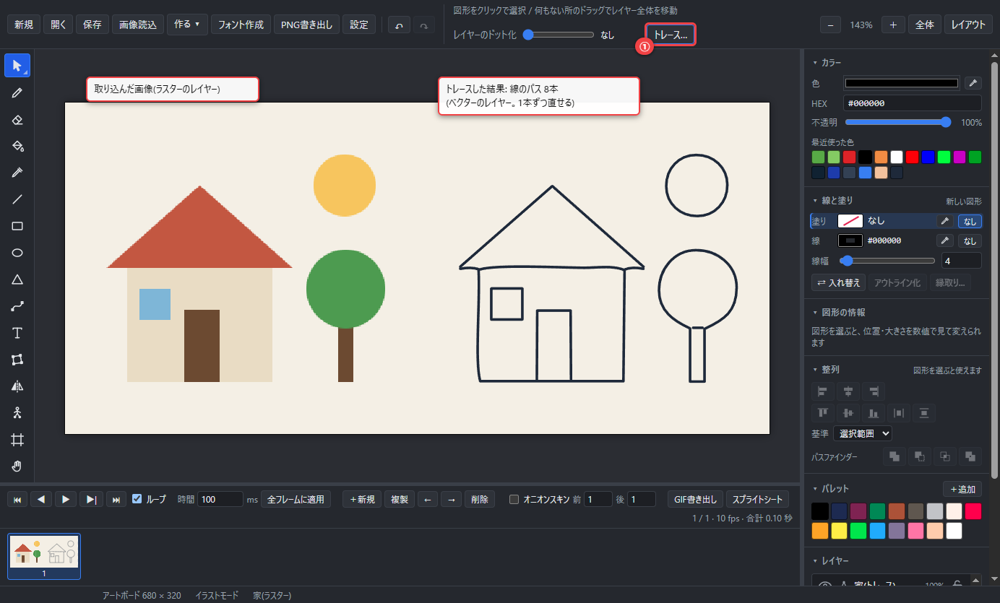
取り込んだ画像から作る(おすすめ)
| つまみ | 内容 |
|---|---|
| 感度 | 大きいほど、弱い境目(うすい色の差)も線にします |
| ぼかし | 大きいほど、細かい模様やノイズを拾わなくなります。小さい絵・ドット絵は 0 に |
| なめらかさ | 大きいほど、点が少なく、なめらかな線になります |
| 短い線を省く | これより短い線(px)は作りません(ごみのような線を減らす) |
| 線の太さ | できる線の太さ(あとで「線と塗り」で変えられます) |
サンプル(samples/)
| ファイル | 見どころ |
|---|---|
front_walk_dot.kodai |
図形で描いた正面キャラ。図形ごとにバインドして「歩く(正面)」、レイヤーをドット化 |
character_walk.kodai |
横向きキャラ。手足をレイヤーで分けて「○○から先」でバインド |
slime_bounce.kodai |
ボーンなし・格子だけのスライム。「弾む」 |
illust_wave.kodai |
0・2・4・6 フレームだけにキーを打ち、間は自動補間で手を振る |
キャラクターの絵(PNG・JPG)を読み込んで、顔・前髪・腕などをクリックするだけで、パーツごとのレイヤーに自動で分けます。分けたパーツはそのままリグ(9章)で動かせます。
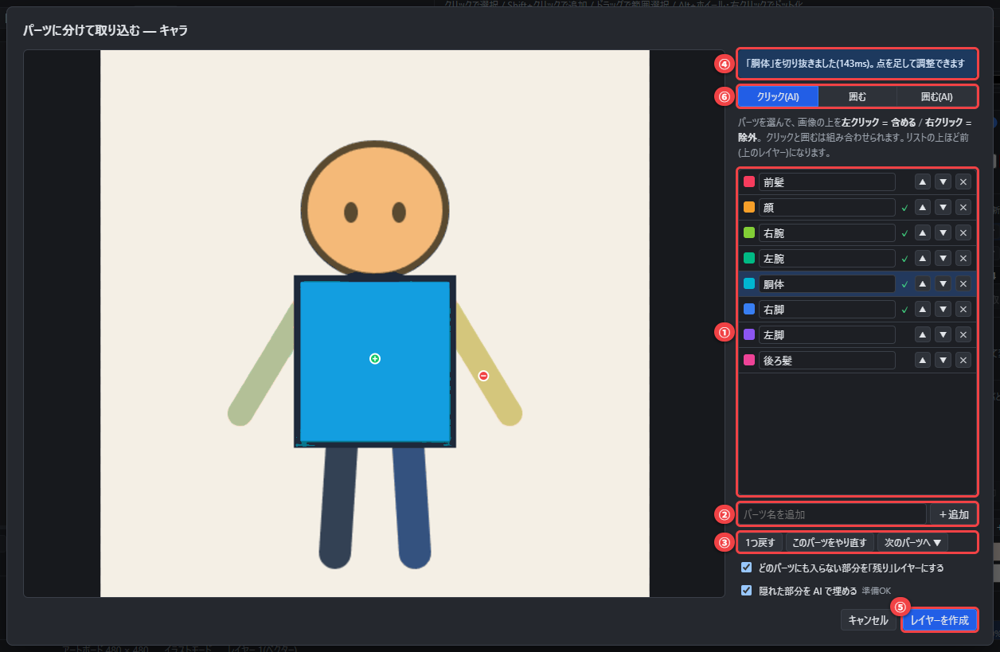
| 操作 | 内容 |
|---|---|
| 左クリック | 含める点(緑の +) |
| 右クリック | 除外する点(赤の −) |
| Backspace / Ctrl+Z / ③「1つ戻す」 | 最後の点(または囲み)を取り消す |
| ③「このパーツをやり直す」 | そのパーツの点・囲みを全部消す |
| Enter / ③「次のパーツへ」 | 次のパーツを選ぶ |
| Esc / キャンセル | 何も追加せずに閉じる |
ペンで囲んで選ぶ(⑥ の切り替え)
| 選び方 | 内容 |
|---|---|
| クリック(AI) | これまでどおり。クリックした所の物を AI が切り抜く |
| 囲む | 画像の上を左ドラッグでぐるっと囲むと、囲んだ形そのままがパーツに入る。右ドラッグで囲んだ所を削る。AI がうまく分けられない所(髪の毛の先・つながった部分など)を手で決めたいときに |
| 囲む(AI) | 物のまわりをざっくり囲むと、中の物を AI が輪郭に沿って切り抜く(囲んだ外は入らない)。右ドラッグで削る |
パーツを分けると、前のパーツ(例: 腕)に隠れていた後ろのパーツ(例: 胴体)の所は空白になります。 「隠れた部分を AI で埋める」(画面右下のチェック、はじめはオン)にしておくと、AI(LaMa)が周りの色や模様に合わせて自動で描き足します。リグで腕を動かしても、後ろに穴が見えません。
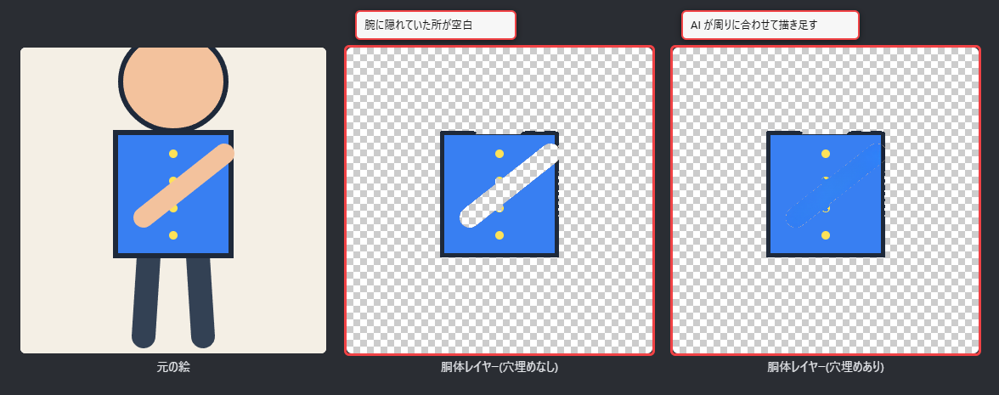
自分でフォント(文字のデザイン)を作れます。作ったフォントは OTF ファイルとして書き出して、ほかのソフトやゲームで使ったり、このアプリの文字ツールでそのまま使ったりできます。
「フォント作成」を押すと、次を選びます。
| 項目 | 内容 |
|---|---|
| フォントの名前 | 書き出したときのフォント名 |
| ベクター | ペン・パス・四角・楕円・多角形などの図形で字を描く(なめらかなフォント) |
| ドット | マス目を塗って字を描く(ドット絵のフォント)。マス目の数(8・12・16・24・32)を選ぶ |
| はじめの文字 | A だけ / 英大文字 / 英小文字 / 数字 / 記号 / ひらがな / カタカナ |
| もとにするフォント | 前に作って「アプリに追加」したフォントを開いて直す(13.7) |
| 画像から作る… | ロゴや手書きの字の画像から字を取り込んで始める(13.6) |
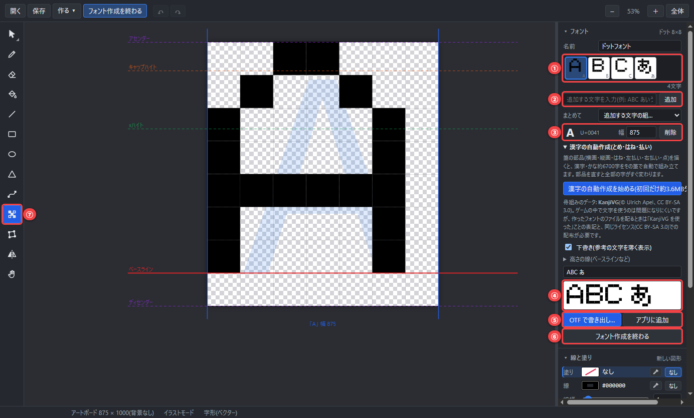
| 番号 | 内容 |
|---|---|
| ① | 文字の一覧。クリックでその字を描く画面へ。描いた字は小さく表示されます |
| ② | 文字を追加: 入力した文字をまとめて追加(例: 「ABC あいう」)。下の「まとめて」で英字・ひらがな・カタカナなどを一度に追加 |
| ③ | 今の文字と、幅(次の字までの間隔)・削除 |
| ④ | 試し書き: 入力した文を、今作っているフォントで表示 |
| ⑤ | OTF で書き出し(フォントファイルを保存)/ アプリに追加(このアプリの文字ツールで使えるようにする) |
| ⑥ | フォント作成を終わる(元の絵に戻る) |
| ⑦ | ドットペン(D)(ドットのフォントのとき): マス目をクリック・ドラッグで塗る。塗ってあるマスから始めると消える。右ボタンは必ず消す |
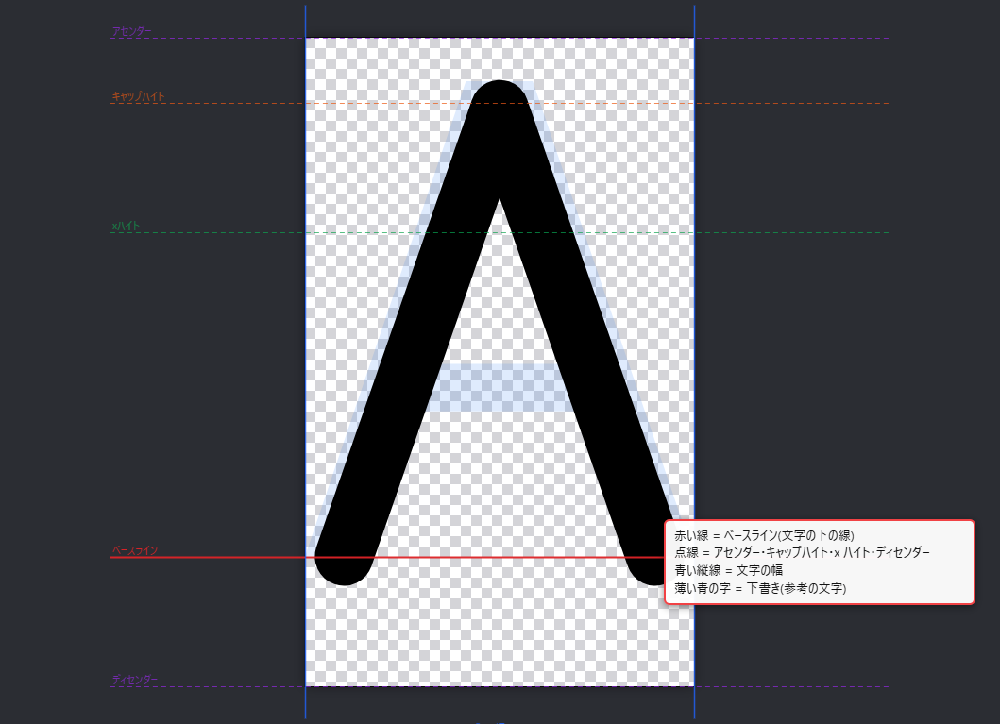
漢字は「骨組み(画の中心線・画の種類・書き順)」と「筆の癖(線の太さ・入り・止め・はね・払いの形)」に分けて考えられます。 このアプリは骨組みのデータ(KanjiVG、漢字・ひらがな・カタカナ・アルファベット・数字 約6700字)を持っているので、筆の部品を描くだけで、全部の字をその筆で自動で組み立てます。 漢字は6つの部品(横画・縦画・はね・左払い・右払い・点)、ひらがな・カタカナは「かな」の部品1本、アルファベット・数字・記号は「英数字」の部品1本で作ります。 部品を直すと、全部の字がすぐに変わります。
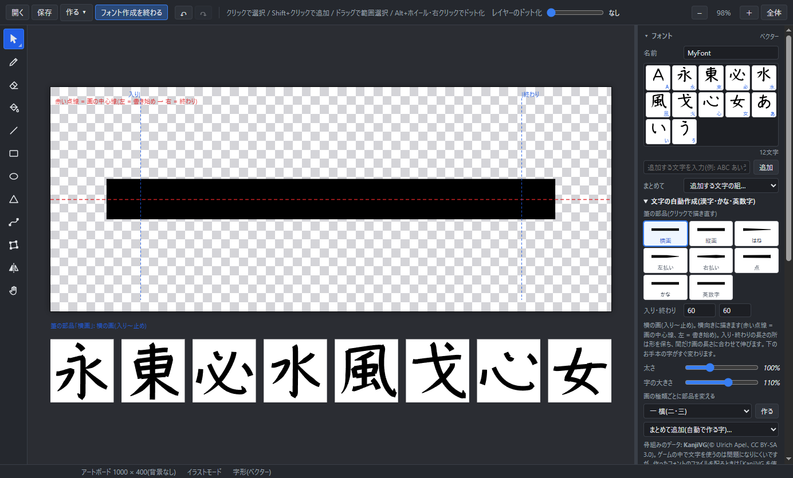
はじめ方: フォントのパネルの「文字の自動作成(漢字・かな・英数字)」→「文字の自動作成を始める」。初めてのときだけ骨組みのデータ(約3.6MB)をダウンロードします。 最初はゴシック風の部品が入っているので、すぐに字ができます。
| 番号 | 内容 |
|---|---|
| ① | 筆の部品: 横画・縦画・はね・左払い・右払い・点(漢字用)と、かな(ひらがな・カタカナ用)・英数字(アルファベット・数字・記号用)。クリックするとその部品を描く画面になります |
| ② | 入り・終わりの長さ: 部品の書き始めと終わりの形を保つ長さ。この部分は伸び縮みせず、間だけ画の長さに合わせて伸びます(横画・縦画・かな・英数字)。0 と 0 にすると部品全体を画の長さに合わせて伸ばします(払い・はね・点) |
| ③ | 太さ(全部の部品の太さをまとめて変える)・字の大きさ |
| ④ | 画の種類ごとに部品を変える: 「㇐ 横」「㇑ 縦」「㇕ 横→縦」など、画の種類を選んで「作る」と、その種類の画だけに使う部品ができます(いまの部品を写して始まります)。× でやめると元の部品に戻ります |
| ⑤ | まとめて追加: アルファベット・数字・記号(A〜Z・a〜z・0〜9・! ? , . : ;)/ ひらがな / カタカナ / 漢字 JIS 第1水準(約3000字)/ 第1・第2水準(約6300字)。追加した字は自動で作られます |
部品の描き方
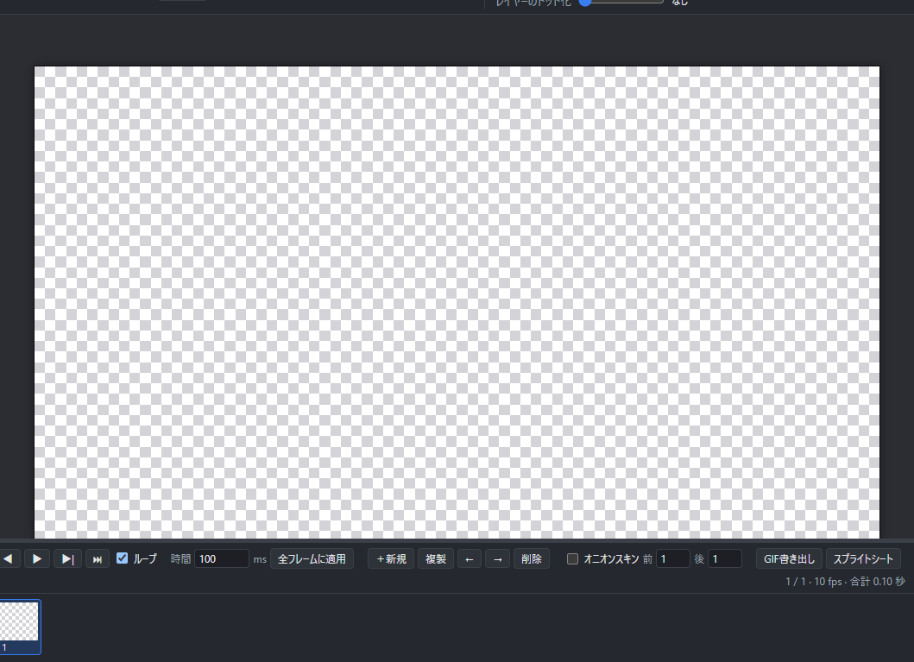
ひらがな・カタカナ・アルファベット・数字
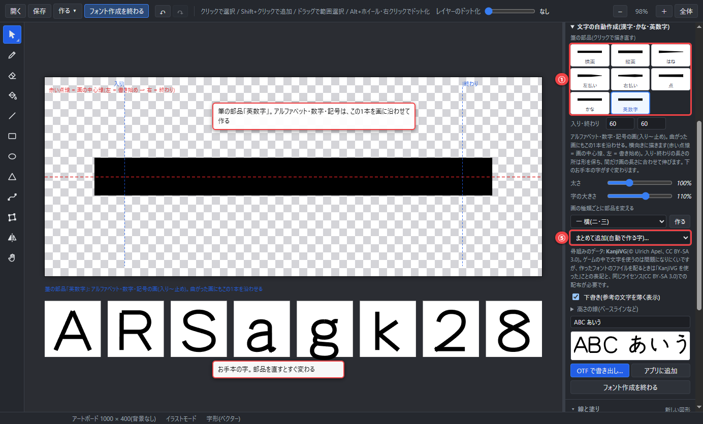
1字だけ直したいとき
ドットのフォントでも使えます。組み立てた字をマス目に合わせてドットにします(マス目が少ないと画がつぶれやすいので、16 以上がおすすめ)。
ライセンスについて: 骨組みのデータ KanjiVG(© Ulrich Apel)は CC BY-SA 3.0(商用利用できます)。 ゲームの中で文字を画像として使うのは問題になりにくいですが、作ったフォントのファイルそのものを配るときは、「KanjiVG を使った」ことの表記と、フォントを同じライセンス(CC BY-SA 3.0)で配ることが必要です。 自動で作った字を含むフォントを書き出すと、フォントの情報(著作権・ライセンスの欄)にこのことが自動で書き込まれます。
ロゴの画像や、紙に書いて撮った字の画像から、字を1つずつ切り分けてフォントの字形にします。 画像にない字も、画像の字から「筆」を取り出して、まとめて作れます(数文字のロゴから、A〜Z・a〜z・数字のそろったフォントに)。
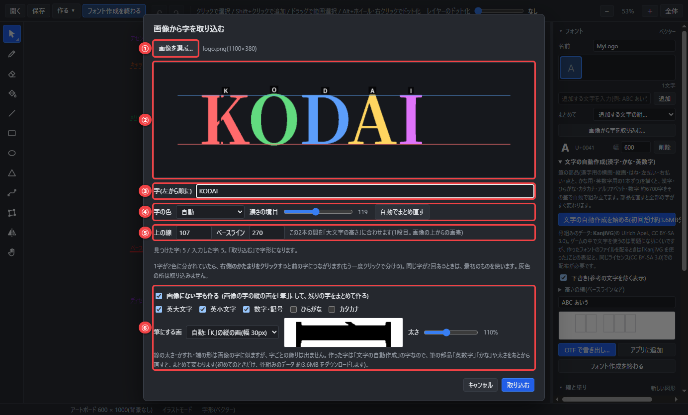
はじめ方: 「フォント作成」の最初の画面で「画像から作る…」、またはフォントのパネルの「画像から字を取り込む…」(今のフォントに足す)。
| 番号 | 内容 |
|---|---|
| ① | 画像を選ぶ…: PNG・JPEG・WebP など。字と背景の色がはっきり違う画像が向いています(背景が透明の画像は、色の付いた所が字になります) |
| ② | 確認の絵: 見つけた字を1字ずつ色を変えて表示します。上に、当てはめた字が出ます。青い線 = 上の線、赤い線 = ベースライン。灰色の所は取り込みません |
| ③ | 字(左から順に): 画像の字を、左から(何段かあれば上の段から)順に入力します。例: VOLKENO |
| ④ | 字の色(自動 / 明るい字 / 暗い字)と濃さの境目: 字がうまく拾えないときに変えます。境目を上げると薄い色(かすれ・別の色の飾り)が外れ、下げると拾います |
| ⑤ | 上の線・ベースライン: この2本の間が、フォントの「大文字の高さ」になります。自動で、字のいちばん濃い帯に合わせます。飾りや、下に伸びた線は帯の外にはみ出したまま取り込まれます |
| ⑥ | 画像にない字も作る: 作る字の組(英大文字・英小文字・数字と記号・ひらがな・カタカナ)、筆にする画、太さ。下の「画像にない字も作る」を見てください |
字の分かれ方を直す
画像にない字も作る(筆を取り出して、残りの字をまとめて作る)
取り込んだあと
ほかの人が作ったロゴやフォントの画像から作るときは、その字を使ってよいか(権利)を確かめてください。
「アプリに追加」したフォントは、あとから開いて、字を足す・入れ替える・直すことができます。
「もとにするフォント」には2種類が出ます。
| 種類 | 内容 |
|---|---|
| 作ったフォントを開いて直す | Kodai で作って「アプリに追加」したフォント(1.40.0 から)。字・筆の部品・自動の字・設定が、そのままの形で開きます |
| 入れてあるフォントの輪郭を読み込む | 作業の内容が取っていないフォント(前の版で作ったもの、「フォントを追加」したファイル)。字の輪郭だけを図形として読み込みます。自動の字もふつうの図形になり、筆の部品はありません。字の多いフォントは先頭の 3000字まで。「アプリに追加」すると、新しいフォントとして入ります |
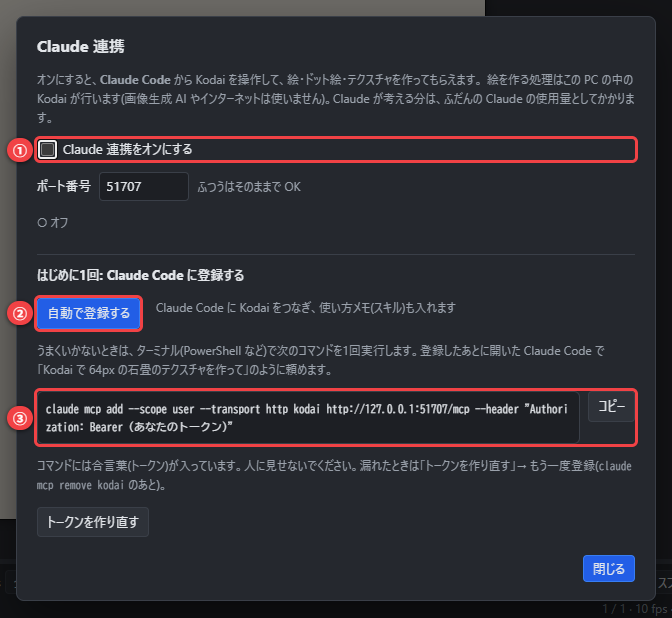
Claude Code(AI のアシスタント)から Kodai を操作して、絵・ドット絵・テクスチャ・簡単なアニメーションを作ってもらえます。 「Kodai で 32px の剣のドット絵を作って、8倍で PNG に書き出して」「64px の継ぎ目なしの石畳を3種類作って」のように、ふつうの言葉で頼みます。
.kodai で保存すれば自分で手直しできますダイアログのいちばん上に、今の登録の状態が出ます。「● 登録済み(Kodai を閉じていても使えます)」なら OK です。 「▲ 登録がずれていて、つながりません」「▲ 前の方式で登録されています」と出たら、「自動で登録する」をもう一度押してください。
1.40.0 までに登録した人へ: 前の方式は、合言葉を Claude Code の側にも書き込んでいたので、Kodai の側と食い違うとつながらなくなりました。 1.41.0 の「自動で登録する」を1回押すと、新しい方式(合言葉を書き込まない・Kodai を閉じていても使える)に変わります。
| できること | 例 |
|---|---|
| 図形で描く | 四角・円・多角形・曲線(SVG のパス)・文字・グラデーション |
| ドット絵を描く | 1ドットずつ置く、図形をドット化 |
| テクスチャを作る | 3.10 と同じ16種類。継ぎ目なし・ドット絵風 |
| 素材ライブラリ | 「このフォルダのテクスチャを取り込んで」でフォルダごと取り込む、名前で探して置く(3.17) |
| アイコン | 「歯車のアイコンを置いて」など、アイコン集(3.18)から探して置く |
| 画像からフォント・作ったフォントを直す | ロゴの画像からフォントを作る、前に作ったフォントを開いて字を足す・入れ替える(13.6・13.7) |
| キャラを作る | 3.11 と同じ。お手本・パーツ・色を指定して、そのあと細部を描き足して仕上げる |
| ドット絵の仕上げ | 輪郭・陰影・左右対称・減色(3.12)、ドットを1つずつ読み返す、マス目と座標つきで見る |
| 見て直す | 描いた絵を画像で見て、色や形を直す |
| アニメーション | フレームを増やす、ボーンを入れて歩く・走る・弾む |
| エフェクト | 3.13 と同じ。「燃えるキャラの GIF を作って」など |
| テロップ | 3.14 と同じ。「『探索開始』のテロップを APNG で作って」など |
| 立体にする | 3.15 と同じ。「このキャラを立体にして .glb で書き出して」など |
| 書き出し・保存 | PNG(拡大も)・GIF・スプライトシート・.kodai |
claude mcp remove kodai --scope user